STORYBRIDGE · 설계와 검증
k6 부하 시험과 처리 한계 분석
연결 수·송신률·팬아웃·복구량별 병목과 자원 사용량
동일한 SEND/s라도 방 인원에 따라 팬아웃량은 크게 달라지고, 느린 수신자가 포함되면 미완료 전달량도 누적된다. 이를 구분하기 위해 연결 수, 송신률, 방 분포, 수신 속도를 나눠 부하를 높이고, 서버의 저장·전달 처리량과 발생기 비용을 함께 측정했다.
조건별로 수신자별 조회, 연결당 문자 버퍼, 복구 dispatcher 대기, 발생기 CPU가 병목으로 확인됐다. 공유 조회와 live 경로 분리 후 복구는 개선됐지만 인기 방 혼합 부하의 일반 방 지연은 목표를 초과했다. 이 결과를 기준으로 저장 경합과 전달 비용을 추가 분석했다.
k6 전환 이후 공유 조회·수신 버퍼·RabbitMQ 구성을 비교한 결과다. 최종 초기 구독·재접속 개선의 측정은 별도 글에 정리했다. 최종 구현의 비교 결과
공통 처리 조건과 부하 구성
StoryBridge의 이번 구현은 고정 구성원 1:1·소규모 채팅이다. seed 사용자 32 명 중 31 명이 송신하고, 같은 사용자의 여러 기기·탭을 별도 수신 의무로 센다. 500 개 연결은 500 명의 서로 다른 가입자를 뜻하지 않는다. 여러 방 시험은 방 31 개, 인기 방은 같은 구성원의 다중 기기를 모은 방 999 다. 본문·멱등키·권한·roomSeq·outbox·연속 cursor 계약은 모든 후보에서 같다. 회원가입·검색·파일·FCM·AI와 물리 HA는 범위 밖이다.
기준 단일 서버/버퍼 기반 전달은 정상 live에서 본문을 push하고 유한 수신 버퍼가 넘치면 DB 로그로 복구한다. 제공 수신자별 로그 전달은 로그 중심 전달이다. 공유 조회·표현 캐시는 수신자별 반복 조회·직렬화·완료 갱신 비용을 줄이고, 정상 live 직접 전달은 연속 live 전달을 공유 로그 복구에서 분리한다. outbox SQL 배치는 outbox SQL을 묶고, 완료 알림 기반 복구는 여기에 ACK 기반 보충과 작업 완료 즉시 다음 조회를 시작하는 스케줄링을 더했다. RabbitMQ·공유 복구/RabbitMQ·완료 알림 복구는 해당 단계의 수신 엔진에 RabbitMQ를 통합한 두 JVM 후보다. 각각의 이력과 소스 해시를 구분한다. 새 결과를 과거 운영 서비스의 성능으로 표현하지 않는다.
부하 조건별 병목
아래 30 초 실행은 경계 탐색 pilot으로, 60~90 초 혼합·과부하 및 600 초 soak와 구분한다. 완료된 요청의 지연이 짧아도 미완료가 남은 실행은 통과로 집계하지 않았다.
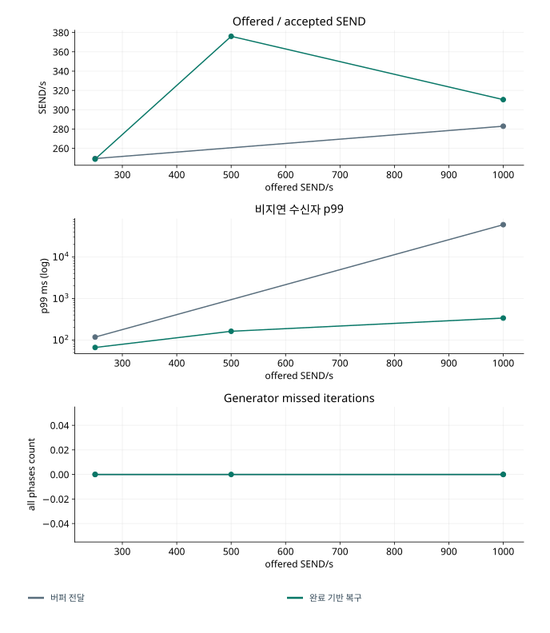
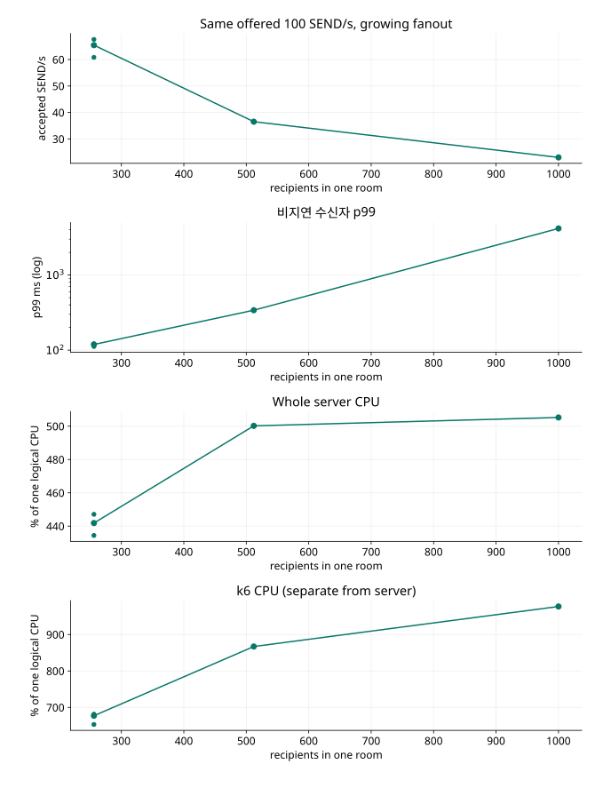
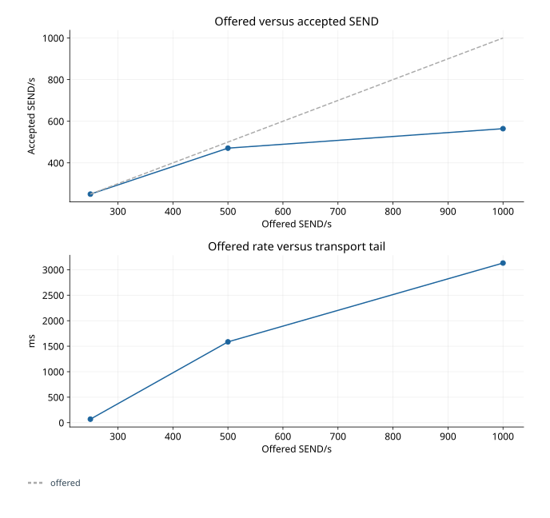
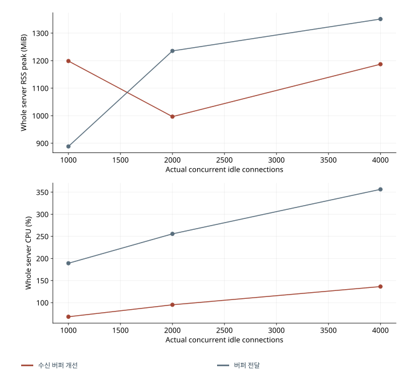
| 구현 / 경로·조건 | 논리 호출 / 저장 / 거절 / 최종 미확정 | 발생부족 지표 p99 / drop(전체) | 저장 응답 / 비지연 수신자 p99(ms) | 미완료 / 프로토콜 오류 | 서버 CPU / RSS |
|---|---|---|---|---|---|
| RabbitMQ·완료 알림 복구 / 혼합 250 건/초 · 90 초 / 탐색·진단 http · 인기·일반 혼합 · 500 conn · 250/s · 90s 512B · slow 0 명 · VU 64 · 반복 0 | 22,299 / 9,876 / 12,388 / 35 | 890.0ms / 208 | 321.5 / 82720.0 | 1,003,508 / 0 | 536.8% / 1401MiB |
| RabbitMQ·수신 버퍼 개선 / 혼합 250 건/초 · 90 초 / 탐색·진단 http · 인기·일반 혼합 · 500 conn · 250/s · 90s 512B · slow 0 명 · VU 64 · 반복 0 | 22,415 / 10,579 / 11,815 / 21 | 344.0ms / 83 | 268.2 / 100101.0 | 0 / 0 | 503.0% / 1346MiB |
| 완료 알림 기반 복구 / 인기 방 100 건/초 · 60 초 / 탐색·진단 http · 인기 방 · 512 conn · 100/s · 60s 512B · slow 0 명 · VU 64 · 반복 0 | 6,001 / 2,190 / 3,811 / 0 | 48.0ms / 0 | 140.1 / 340.0 | 0 / 0 | 500.2% / 761MiB |
| 완료 알림 기반 복구 / 인기 방 100 건/초 · 60 초 / 탐색·진단 http · 인기 방 · 1000 conn · 100/s · 60s 512B · slow 0 명 · VU 64 · 반복 0 | 5,999 / 1,380 / 4,619 / 0 | 95.0ms / 0 | 327.4 / 4162.0 | 0 / 0 | 505.2% / 1092MiB |
| 완료 알림 기반 복구 / 인기 방 250 건/초 · 60 초 / 탐색·진단 http · 인기 방 · 500 conn · 250/s · 60s 512B · slow 0 명 · VU 64 · 반복 0 | 15,000 / 2,247 / 12,702 / 51 | 64.0ms / 0 | 198.0 / 488.0 | 0 / 0 | 524.0% / 988MiB |
| 완료 알림 기반 복구 / 인기 방 250 건/초 · 60 초 / 탐색·진단 http · 인기 방 · 128 conn · 250/s · 60s 512B · slow 0 명 · VU 64 · 반복 0 | 15,001 / 4,890 / 10,079 / 32 | 8.0ms / 0 | 37.1 / 100.0 | 0 / 0 | 464.3% / 883MiB |
| 완료 알림 기반 복구 / 혼합 250 건/초 · 60 초 / 탐색·진단 http · 인기·일반 혼합 · 500 conn · 250/s · 60s 512B · slow 0 명 · VU 64 · 반복 0 | 14,999 / 5,435 / 9,533 / 31 | 53.0ms / 0 | 129.0 / 305.0 | 0 / 0 | 558.5% / 917MiB |
| 완료 알림 기반 복구 / 혼합 250 건/초 · 60 초 / 탐색·진단 http · 인기·일반 혼합 · 500 conn · 250/s · 60s 512B · slow 40 명 · VU 64 · 반복 0 | 15,001 / 5,024 / 9,938 / 39 | 68.0ms / 0 | 163.8 / 431.0 | 0 / 0 | 587.9% / 964MiB |
| 완료 알림 기반 복구 / 혼합 250 건/초 · 60 초 / 탐색·진단 http · 인기·일반 혼합 · 500 conn · 250/s · 60s 4096B · slow 40 명 · VU 64 · 반복 0 | 15,003 / 4,551 / 10,423 / 29 | 77.0ms / 0 | 227.0 / 747.0 | 0 / 0 | 555.3% / 1045MiB |
| 완료 알림 기반 복구 / 혼합 250 건/초 · 90 초 / 탐색·진단 http · 인기·일반 혼합 · 500 conn · 250/s · 90s 512B · slow 0 명 · VU 512 · 반복 0 | 44,999 / 9,025 / 35,974 / 0 | 44.0ms / 0 | 235.5 / 519.0 | 0 / 0 | 564.5% / 1014MiB |
| 완료 알림 기반 복구 / 혼합 250 건/초 · 90 초 / 탐색·진단 http · 인기·일반 혼합 · 500 conn · 250/s · 90s 512B · slow 0 명 · VU 64 · 반복 0 | 22,500 / 11,325 / 11,126 / 49 | 50.0ms / 0 | 128.0 / 71872.0 | 968,493 / 0 | 454.9% / 1046MiB |
| 완료 알림 기반 복구 / 방 분산 250 건/초 · 60 초 / 탐색·진단 ws · 방 분산 · 500 conn · 250/s · 60s 512B · slow 0 명 · VU 64 · 반복 0 | 15,004 / 15,004 / 0 / 0 | 134.0ms / 0 | 74.0 / 102.0 | 0 / 0 | 228.7% / 909MiB |
| 완료 알림 기반 복구 / 방 분산 250 건/초 · 60 초 / 탐색·진단 http · 방 분산 · 500 conn · 250/s · 60s 128B · slow 0 명 · VU 64 · 반복 0 | 15,001 / 14,962 / 39 / 0 | 3.0ms / 0 | 16.0 / 61.0 | 0 / 0 | 367.3% / 965MiB |
| 완료 알림 기반 복구 / 방 분산 500 건/초 · 60 초 / 탐색·진단 http · 방 분산 · 500 conn · 500/s · 60s 512B · slow 0 명 · VU 64 · 반복 0 | 29,416 / 20,469 / 8,933 / 14 | 1177.0ms / 1250 | 122.0 / 228.0 | 0 / 0 | 606.4% / 961MiB |
| 완료 알림 기반 복구 / 인기 방 100 건/초 · 60 초 / 발생기 진단 http · 인기 방 · 1000 conn · 100/s · 60s 512B · slow 0 명 · VU 64 · 반복 0 | 6,000 / 1,352 / 4,648 / 0 | 117.0ms / 0 | 337.9 / 2047.0 | 0 / 0 | 466.1% / 1161MiB |
| 완료 알림 기반 복구 / 방 분산 500 건/초 · 60 초 / 발생기 진단 http · 방 분산 · 500 conn · 500/s · 60s 512B · slow 0 명 · VU 512 · 반복 0 | 30,001 / 22,563 / 7,438 / 0 | 42.0ms / 0 | 74.0 / 162.0 | 0 / 0 | 575.3% / 970MiB |
| 완료 알림 기반 복구 / 방 분산 250 건/초 · 600 초 / 탐색·진단 http · 방 분산 · 500 conn · 250/s · 600s 512B · slow 0 명 · VU 64 · 반복 0 | 150,000 / 147,760 / 2,214 / 26 | 8.0ms / 1 | 22.0 / 477.4 | 0 / 0 | 395.9% / 1423MiB |
| 정상 live 직접 전달 / 인기 방 100 건/초 · 30 초 / 탐색·진단 http · 인기 방 · 512 conn · 100/s · 30s 512B · slow 0 명 · VU 64 · 반복 0 | 3,001 / 1,620 / 1,381 / 0 | 39.0ms / 0 | 116.4 / 330.0 | 0 / 0 | 361.7% / 980MiB |
| 정상 live 직접 전달 / 인기 방 100 건/초 · 30 초 / 탐색·진단 http · 인기 방 · 1000 conn · 100/s · 30s 512B · slow 0 명 · VU 64 · 반복 0 | 3,001 / 1,493 / 1,508 / 0 | 40.0ms / 0 | 152.2 / 15638.0 | 14,859 / 0 | 340.9% / 1064MiB |
| 정상 live 직접 전달 / 혼합 250 건/초 · 60 초 / 탐색·진단 http · 인기·일반 혼합 · 500 conn · 250/s · 60s 4096B · slow 40 명 · VU 64 · 반복 0 | 15,000 / 11,322 / 3,672 / 6 | 19.0ms / 0 | 36.0 / 62298.0 | 2,732,754 / 0 | 264.1% / 999MiB |
| 정상 live 직접 전달 / 혼합 250 건/초 · 60 초 / 탐색·진단 http · 인기·일반 혼합 · 500 conn · 250/s · 60s 512B · slow 100 명 · VU 64 · 반복 0 | 15,001 / 12,885 / 2,113 / 3 | 5.0ms / 0 | 15.0 / 65129.0 | 3,464,139 / 0 | 214.0% / 999MiB |
| 정상 live 직접 전달 / 혼합 250 건/초 · 90 초 / 탐색·진단 http · 인기·일반 혼합 · 500 conn · 250/s · 90s 512B · slow 0 명 · VU 64 · 반복 0 | 45,002 / 22,420 / 22,536 / 46 | 18.0ms / 0 | 35.0 / 88182.0 | 4,474,131 / 0 | 304.4% / 976MiB |
| 정상 live 직접 전달 / 혼합 250 건/초 · 90 초 / 탐색·진단 http · 인기·일반 혼합 · 500 conn · 250/s · 90s 512B · slow 0 명 · VU 64 · 반복 0 | 22,501 / 11,184 / 11,279 / 38 | 50.0ms / 0 | 109.2 / 87237.0 | 1,919,893 / 0 | 415.6% / 1027MiB |
| 정상 live 직접 전달 / 방 분산 500 건/초 · 30 초 / 탐색·진단 http · 방 분산 · 500 conn · 500/s · 30s 512B · slow 0 명 · VU 64 · 반복 0 | 15,000 / 14,124 / 876 / 0 | 8.0ms / 1 | 26.0 / 1585.0 | 0 / 0 | 511.8% / 940MiB |
| 정상 live 직접 전달 / 방 분산 1000 건/초 · 30 초 / 탐색·진단 http · 방 분산 · 500 conn · 1000/s · 30s 512B · slow 0 명 · VU 64 · 반복 0 | 29,402 / 16,931 / 12,447 / 24 | 599.0ms / 2020 | 79.0 / 3131.0 | 0 / 0 | 605.4% / 984MiB |
| 정상 live 직접 전달 / 방 분산 250 건/초 · 30 초 / 탐색·진단 ws · 방 분산 · 500 conn · 250/s · 30s 512B · slow 0 명 · VU 64 · 반복 0 | 7,502 / 7,502 / 0 / 0 | 136.0ms / 0 | 66.0 / 112.0 | 0 / 0 | 194.6% / 897MiB |
| 정상 live 직접 전달 / 방 분산 250 건/초 · 30 초 / 탐색·진단 http · 방 분산 · 500 conn · 250/s · 30s 128B · slow 0 명 · VU 64 · 반복 0 | 7,501 / 7,489 / 12 / 0 | 5.0ms / 0 | 15.1 / 67.0 | 0 / 0 | 202.9% / 937MiB |
| 수신 버퍼 개선 / 혼합 250 건/초 · 90 초 / 탐색·진단 http · 인기·일반 혼합 · 500 conn · 250/s · 90s 512B · slow 0 명 · VU 64 · 반복 0 | 22,498 / 9,361 / 13,079 / 58 | 113.0ms / 3 | 218.4 / 75640.0 | 0 / 0 | 430.9% / 907MiB |
| 수신 버퍼 개선 / 방 분산 0 건/초 · 60 초 / 탐색·진단 http · 방 분산 · 4000 conn · 0/s · 60s 512B · slow 0 명 · VU 64 · 반복 0 | 0 / 0 / 0 / 0 | 0.0ms / 0 | 0.0 / 0.0 | 0 / 0 | 136.4% / 1187MiB |
| 수신 버퍼 개선 / 방 분산 0 건/초 · 60 초 / 탐색·진단 http · 방 분산 · 1000 conn · 0/s · 60s 512B · slow 0 명 · VU 64 · 반복 0 | 0 / 0 / 0 / 0 | 0.0ms / 0 | 0.0 / 0.0 | 0 / 0 | 68.1% / 1199MiB |
| 수신 버퍼 개선 / 방 분산 0 건/초 · 60 초 / 탐색·진단 http · 방 분산 · 2000 conn · 0/s · 60s 512B · slow 0 명 · VU 64 · 반복 0 | 0 / 0 / 0 / 0 | 0.0ms / 0 | 0.0 / 0.0 | 0 / 0 | 95.2% / 997MiB |
| 수신 버퍼 개선 / 방 분산 250 건/초 · 600 초 / 탐색·진단 http · 방 분산 · 500 conn · 250/s · 600s 512B · slow 0 명 · VU 64 · 반복 0 | 149,991 / 147,962 / 2,018 / 11 | 39.0ms / 9 | 21.0 / 391.0 | 0 / 0 | 320.3% / 1130MiB |
좁은 화면에서는 표를 좌우로 이동할 수 있습니다. 수치와 단위는 원본의 반복별 값을 유지했습니다.
연결 수·팬아웃·송신률별 측정 결과
완료 알림 기반 복구의 HTTP100 SEND/s 인기 방에서 수신자를 256→512→1000 개로 늘리자 저장 성공은 분당 3,648~4,055→2,190→1,380 건으로 감소했다. 1000 개에서는 k6 도 논리 CPU 약 9.8 개를 써 서버만의 포화라고 단정할 수 없다. 유휴 연결 유지와 지속 팬아웃은 부하 특성이 다르다. 아래 발생기 진단은 같은 1000 연결에서 수신 hash·계측 비용을 줄여 발생기 영향을 확인했다.
같은 500 연결·목표 250 SEND/s에서도 분산 방과 인기 방 집중은 저장 한 건이 만드는 수신 의무 수가 달라, 완료 알림 기반 복구의 분산 방은 거의 목표율을 저장했지만 인기 방 500 개는 2,247 건/분만 저장했다. 이는 SEND 건수만 고정한 비교이며 전달량까지 동일하다는 뜻이 아니다. 인기·일반 혼합에서 느린 수신자를 0→40→100 개로 바꾼 결과와 512→4096B 결과는 실제 적용 부하·byte credit·수신기 CPU의 변화를 함께 읽어야 한다. 저장 성공 감소에 대한 개별 SQL의 기여도는 분리하지 못했다.
1000 SEND/s·VU512 비교에서는 양쪽의 drop이 0 이 됐지만 성공 저장은 대략 260~316/s였다. 버퍼 기반 전달은 종료 뒤 outbox9,558~11,420 건과 일부 전달 의무가 남았고 완료 알림 기반 복구는 outbox와 전달을 마쳤다. backlog 해소는 개선됐지만, 1000 건/s 성공 저장을 달성한 것은 아니다. 순간 급증과 재접속에서는 정상 방 지연과 고정 H 완료를 별도로 남겼다.
발생기 후속 진단
송신 VU 부족과 수신 hash/계측 비용을 서로 다른 실행으로 분리했다. cache hit는 서버 cache hit가 아니며 k6 내부의 동일 본문 검증 재사용이다. 아래는 발생기를 바꾼 별도 진단이며, 앞선 서버 비교의 반복 횟수에는 포함하지 않았다.
| 실행 | 송신 VU / 수신 fast | 목표 호출 / 실제 호출 / 부족 | hash hit / miss / eviction | 서버 / k6 CPU(%) | 미완료 |
|---|---|---|---|---|---|
| 완료 알림 기반 복구 / 인기 방 100 건/초 · 60 초 / 발생기 진단 | 64 / True | 6000 / 6000 / 0 | 1511600 / 77400 / 71000 | 466.1 / 804.5 | 0 |
| 완료 알림 기반 복구 / 방 분산 500 건/초 · 60 초 / 발생기 진단 | 512 / False | 30000 / 30001 / 0 | 0 / 0 / 0 | 575.3 / 318.0 | 0 |
좁은 화면에서는 표를 좌우로 이동할 수 있습니다. 수치와 단위는 원본의 반복별 값을 유지했습니다.
500/s 송신 VU512 진단은 실제 30,001 회·drop0·최종 미확정 0, 저장 22,563 건/분과거절 7,438 건을 남겼다. 앞선 VU64 의drop1,250 을 목표율을 낮추지 않고 해소했다. 인기 방 1,000 연결의 bounded hash 재사용은 k6 CPU를약 975%에서 805%, 수신 p99 를 4,162→2,047ms로 낮췄지만 저장 성공은 1,380→1,352 건/분으로 늘지 않았다. 다만 한 번의 진단이므로 개선율을 일반화할 수 없고, 해당 조건에서는 발생기 비용이 여전히 커서 서버만의 최대 처리량은 확인하지 못했다. 서버 구조 비교와 발생기 최적화의 효과를 합산하지 않는다.
일반 방 지연과 발생기 사용량
좁은 화면에서는 표를 좌우로 이동할 수 있습니다. 수치와 단위는 원본의 반복별 값을 유지했습니다.
인기 방만 있는 실행의 정상 방 p99=0 은 해당 표본이 없다는 뜻이다. 재접속 reported=0 인 실행에 복구 latency 0ms를 주장하지 않는다.
실제 수신 창과 네트워크 비용
아래 수신율은 payload의 발송 phase와 무관하게 실제 측정 시간 창에 받은 고유 메시지 수다. 이전 실행에는 이 별도 counter가 없어 미수집으로 남긴다. 종료 감사까지 받은 측정-origin 메시지를 측정 초로 나눈 legacy 값은 순간 전달 처리량으로 사용하지 않는다. byte는 k6 연결 전체의 송수신이며 DB·broker wire를 합친 네트워크 총량이 아니다.
| 실행 | 측정 창 고유 수신/s | 전체 k6 송신 / 수신 MiB | 물리 SEND / 재시도 / 최초 불명 / 결과 조회 | 측정 / warm drop |
|---|---|---|---|---|
| RabbitMQ·완료 알림 복구 / 인기 방 100 건/초 · 60 초 / 반복 1 | 미수집 | 107.1 / 902.1 | 6001 / 0 / 0 / 0 | 0 / 0 |
| RabbitMQ·완료 알림 복구 / 인기 방 100 건/초 · 60 초 / 반복 2 | 미수집 | 122.4 / 1033.8 | 6000 / 0 / 0 / 0 | 0 / 0 |
| RabbitMQ·완료 알림 복구 / 인기 방 100 건/초 · 60 초 / 반복 3 | 16453.0 | 112.6 / 948.8 | 5996 / 0 / 0 / 0 | 5 / 0 |
| 완료 알림 기반 복구 / 인기 방 100 건/초 · 60 초 / 반복 1 | 미수집 | 118.6 / 991.1 | 6001 / 0 / 0 / 0 | 0 / 0 |
| 완료 알림 기반 복구 / 인기 방 100 건/초 · 60 초 / 반복 2 | 미수집 | 116.0 / 968.3 | 6001 / 0 / 0 / 0 | 0 / 0 |
| 완료 알림 기반 복구 / 인기 방 100 건/초 · 60 초 / 반복 3 | 15569.4 | 109.2 / 908.1 | 6001 / 0 / 0 / 0 | 0 / 0 |
| 완료 알림 기반 복구 / 혼합 250 건/초 · 60 초 / 반복 1 | 미수집 | 119.1 / 931.1 | 15041 / 32 / 51 / 74 | 0 / 0 |
| 완료 알림 기반 복구 / 혼합 250 건/초 · 60 초 / 반복 2 | 미수집 | 109.4 / 844.9 | 15019 / 19 / 42 / 56 | 0 / 0 |
| 완료 알림 기반 복구 / 혼합 250 건/초 · 60 초 / 반복 3 | 14078.3 | 107.4 / 828.1 | 15028 / 28 / 62 / 83 | 0 / 0 |
| 완료 알림 기반 복구 / 방 분산 1000 건/초 · 60 초 / 반복 1 | 미수집 | 84.0 / 276.4 | 60119 / 118 / 236 / 313 | 0 / 0 |
| 완료 알림 기반 복구 / 방 분산 1000 건/초 · 60 초 / 반복 2 | 5102.7 | 87.3 / 305.7 | 60119 / 118 / 281 / 347 | 0 / 0 |
| 완료 알림 기반 복구 / 방 분산 1000 건/초 · 60 초 / 반복 3 | 5019.8 | 86.8 / 301.1 | 60117 / 115 / 252 / 334 | 0 / 0 |
| 완료 알림 기반 복구 / 방 분산 250 건/초 · 60 초 / 반복 1 | 미수집 | 42.1 / 246.1 | 15000 / 0 / 11 / 11 | 0 / 0 |
| 완료 알림 기반 복구 / 방 분산 250 건/초 · 60 초 / 반복 2 | 미수집 | 41.9 / 244.6 | 15001 / 0 / 11 / 11 | 0 / 0 |
| 완료 알림 기반 복구 / 방 분산 250 건/초 · 60 초 / 반복 3 | 4017.2 | 42.1 / 245.8 | 15002 / 0 / 11 / 11 | 0 / 0 |
| 버퍼 기반 전달 / 혼합 250 건/초 · 60 초 / 반복 1 | 미수집 | 96.8 / 734.1 | 15009 / 8 / 43 / 47 | 0 / 0 |
| 버퍼 기반 전달 / 혼합 250 건/초 · 60 초 / 반복 2 | 미수집 | 81.7 / 602.4 | 15003 / 3 / 39 / 42 | 0 / 0 |
| 버퍼 기반 전달 / 혼합 250 건/초 · 60 초 / 반복 3 | 8898.8 | 83.5 / 617.1 | 15004 / 3 / 50 / 51 | 0 / 0 |
| 버퍼 기반 전달 / 방 분산 1000 건/초 · 60 초 / 반복 1 | 미수집 | 83.9 / 281.2 | 60041 / 40 / 377 / 407 | 0 / 0 |
| 버퍼 기반 전달 / 방 분산 1000 건/초 · 60 초 / 반복 2 | 2870.9 | 81.3 / 259.0 | 60039 / 38 / 254 / 278 | 0 / 0 |
| 버퍼 기반 전달 / 방 분산 1000 건/초 · 60 초 / 반복 3 | 3108.5 | 82.5 / 270.1 | 59997 / 19 / 215 / 227 | 0 / 0 |
| RabbitMQ·완료 알림 복구 / 혼합 250 건/초 · 90 초 / 탐색·진단 | 11326.6 | 154.5 / 1192.2 | 22342 / 43 / 70 / 105 | 203 / 5 |
| RabbitMQ·수신 버퍼 개선 / 혼합 250 건/초 · 90 초 / 탐색·진단 | 12630.5 | 274.6 / 2236.3 | 22443 / 28 / 49 / 70 | 82 / 1 |
| 완료 알림 기반 복구 / 인기 방 100 건/초 · 60 초 / 탐색·진단 | 18678.8 | 129.1 / 1080.1 | 6001 / 0 / 0 / 0 | 0 / 0 |
| 완료 알림 기반 복구 / 인기 방 100 건/초 · 60 초 / 탐색·진단 | 22329.8 | 155.6 / 1323.3 | 5999 / 0 / 0 / 0 | 0 / 0 |
| 완료 알림 기반 복구 / 인기 방 250 건/초 · 60 초 / 탐색·진단 | 18708.6 | 137.8 / 1092.2 | 15052 / 52 / 67 / 109 | 0 / 0 |
| 완료 알림 기반 복구 / 인기 방 250 건/초 · 60 초 / 탐색·진단 | 10446.5 | 79.0 / 578.4 | 15031 / 30 / 44 / 68 | 0 / 0 |
| 완료 알림 기반 복구 / 혼합 250 건/초 · 60 초 / 탐색·진단 | 16806.7 | 124.9 / 981.5 | 15031 / 32 / 56 / 83 | 0 / 0 |
| 완료 알림 기반 복구 / 혼합 250 건/초 · 60 초 / 탐색·진단 | 14932.5 | 110.6 / 857.2 | 15043 / 42 / 61 / 93 | 0 / 0 |
| 완료 알림 기반 복구 / 혼합 250 건/초 · 60 초 / 탐색·진단 | 13037.6 | 160.6 / 3962.6 | 15038 / 35 / 55 / 81 | 0 / 0 |
| 완료 알림 기반 복구 / 혼합 250 건/초 · 90 초 / 탐색·진단 | 14912.0 | 176.0 / 1237.9 | 44999 / 0 / 0 / 0 | 0 / 0 |
| 완료 알림 기반 복구 / 혼합 250 건/초 · 90 초 / 탐색·진단 | 16497.7 | 204.4 / 1626.2 | 22549 / 49 / 92 / 128 | 0 / 0 |
| 완료 알림 기반 복구 / 방 분산 250 건/초 · 60 초 / 탐색·진단 | 4033.6 | 39.0 / 245.6 | 15004 / 0 / 0 / 0 | 0 / 0 |
| 완료 알림 기반 복구 / 방 분산 250 건/초 · 60 초 / 탐색·진단 | 4020.7 | 36.0 / 146.1 | 15001 / 0 / 14 / 14 | 0 / 0 |
| 완료 알림 기반 복구 / 방 분산 500 건/초 · 60 초 / 탐색·진단 | 5502.9 | 63.2 / 328.9 | 29446 / 30 / 82 / 88 | 584 / 666 |
| 완료 알림 기반 복구 / 인기 방 100 건/초 · 60 초 / 발생기 진단 | 22092.3 | 152.8 / 1300.8 | 6000 / 0 / 0 / 0 | 0 / 0 |
| 완료 알림 기반 복구 / 방 분산 500 건/초 · 60 초 / 발생기 진단 | 6060.4 | 68.2 / 366.1 | 30001 / 0 / 0 / 0 | 0 / 0 |
| 완료 알림 기반 복구 / 방 분산 250 건/초 · 600 초 / 탐색·진단 | 3972.3 | 364.8 / 2126.6 | 150009 / 9 / 133 / 135 | 1 / 0 |
| 수신 버퍼 개선 / 혼합 250 건/초 · 90 초 / 탐색·진단 | 12892.7 | 239.3 / 1920.9 | 22540 / 42 / 98 / 132 | 2 / 1 |
| 수신 버퍼 개선 / 방 분산 0 건/초 · 60 초 / 탐색·진단 | 0.0 | 30.2 / 100.8 | 0 / 0 / 0 / 0 | 0 / 0 |
| 수신 버퍼 개선 / 방 분산 0 건/초 · 60 초 / 탐색·진단 | 0.0 | 7.8 / 26.2 | 0 / 0 / 0 / 0 | 0 / 0 |
| 수신 버퍼 개선 / 방 분산 0 건/초 · 60 초 / 탐색·진단 | 0.0 | 15.5 / 51.7 | 0 / 0 / 0 / 0 | 0 / 0 |
| 수신 버퍼 개선 / 방 분산 250 건/초 · 600 초 / 탐색·진단 | 3977.9 | 364.7 / 2124.8 | 149996 / 5 / 112 / 113 | 9 / 0 |
좁은 화면에서는 표를 좌우로 이동할 수 있습니다. 수치와 단위는 원본의 반복별 값을 유지했습니다.
DB·broker로 이동한 wire 비용
추가 계측 이후 실행만 표시한다. MySQL global Bytes_sent/received 차이는 관측 SQL을 포함하며, broker는 실제 AMQP connection의 octet 차이다. 종료 전후 connection 집합·생성시각이 달라지면 누적량을 복원할 수 없어 미계측으로 둔다. k6 와 같은 byte를 양쪽에서 중복 센 값을 네트워크 총량으로 합산하지 않는다. 모두 워밍업·감사 구간을 포함하며 측정창의 초당값과 다르다.
| 실행 | MySQL 송신 / 수신 MiB | AMQP broker 송신 / 수신 MiB | AMQP 연결 집합 유지 |
|---|---|---|---|
| RabbitMQ·수신 버퍼 개선 / 인기 방 100 건/초 · 60 초 / 반복 3 | 61.92 / 15.47 | 미계측 / 미계측 | False |
| 수신 버퍼 개선 / 혼합 250 건/초 · 60 초 / 반복 3 | 89.22 / 18.47 | 미계측 / 미계측 | broker 미선택 |
| 수신 버퍼 개선 / 방 분산 250 건/초 · 60 초 / 반복 3 | 41.82 / 41.44 | 미계측 / 미계측 | broker 미선택 |
| RabbitMQ·수신 버퍼 개선 / 혼합 250 건/초 · 90 초 / 탐색·진단 | 701.00 / 60.69 | 미계측 / 미계측 | False |
| 완료 알림 기반 복구 / 인기 방 100 건/초 · 60 초 / 발생기 진단 | 84.35 / 9.91 | 미계측 / 미계측 | broker 미선택 |
| 완료 알림 기반 복구 / 방 분산 500 건/초 · 60 초 / 발생기 진단 | 54.84 / 56.64 | 미계측 / 미계측 | broker 미선택 |
| 수신 버퍼 개선 / 혼합 250 건/초 · 90 초 / 탐색·진단 | 317.89 / 38.58 | 미계측 / 미계측 | broker 미선택 |
| 수신 버퍼 개선 / 방 분산 0 건/초 · 60 초 / 탐색·진단 | 10.09 / 9.37 | 미계측 / 미계측 | broker 미선택 |
| 수신 버퍼 개선 / 방 분산 0 건/초 · 60 초 / 탐색·진단 | 15.03 / 13.73 | 미계측 / 미계측 | broker 미선택 |
| 수신 버퍼 개선 / 방 분산 250 건/초 · 600 초 / 탐색·진단 | 383.59 / 364.92 | 미계측 / 미계측 | broker 미선택 |
좁은 화면에서는 표를 좌우로 이동할 수 있습니다. 수치와 단위는 원본의 반복별 값을 유지했습니다.
이 단계에서 선택한 구조와 남은 병목
- 이 단계의 선택은 수신 버퍼 개선이다. 정상 연속 live와 공유 로그 복구를 분리하고, ACK·worker 완료 때 읽기를 진행하며, 메시지별 outbox SQL batch와 유한 표현 재사용을 결합한다.
- 같은 500 연결 혼합 부하에서 버퍼 기반 전달은 세 반복 모두 전달 의무가 남았고 완료 알림 기반 복구와 수신 버퍼 개선은 세 반복 모두 종료 감사에서 전량 전달했다. 더 많은 CPU와 거절을 사용한 결과이므로 처리량·정상 방 지연까지 함께 비교했다.
- 수신자별 로그 전달 전체 로그 전달, 공유 조회·표현 캐시 조회 병합만 적용, 정상 live 직접 전달 live 분리만 적용, outbox SQL 배치 SQL batch만 적용은 각각 지연 또는 복구 미완료를 남겼다. 완료 알림 기반 복구의 작업 완료 기반 읽기와 수신 버퍼 개선의 입력 메모리 개선까지 실제 코드·태그·실패 원본으로 연결했다.
- 연결별 65536-char 선할당을 4096-char partial 입력으로 바꿨다. 같은 2000 연결의 실제 post-GC char[]는 263872336→18145232byte였고, 수신 버퍼 개선의 4000 유휴 연결은 유지·정상 종료했다. 큰 본문·FIN·권한·전역 16MiB·3 초 미완성 timeout·TCP 회수 회귀도 확인했다.
- RabbitMQ·수신 버퍼 개선은 실제 cross-gateway 전달, broker 단절 중 WebSocket 유지·DB 복구, queue overflow, ACK 이후 gateway 종료와 다른 gateway 재접속, 만료 publisher lease의 늦은 완료를 검증했다. 추가 JVM·broker·routing 운영 비용 때문에 단일 gateway의 기본 선택을 대체하지 않는다.
목표 미달 항목은 다음과 같다.
- 수신 버퍼 개선 분산 방 250/s 세 반복 중 최종 SEND 미확정 1 건이 있었고, 혼합 정상 방 p99 323~375ms는 250ms 목표를 넘었다. 전달 전량 완료와 모든 SLO 통과는 다르다.
- 수신 버퍼 개선 10 분/500 연결/250s 재접속 시험은 저장 150020·전달의무 2419700 전량 완료, outbox0 이었다. 그러나 정상 수신 p99 391ms, 최종 SEND 미확정 11 건, dropped iteration9 건을 남겼다. 미확정 중 5 건은 종료 DB에 저장됐고 6 건은 없었으며 hash 불일치 0 이었다.
- 1000 SEND/s에서 발생기 VU512 로 drop을 제거한 비교는 완료 알림 기반 복구/버퍼 기반 전달 소스의 결과다. 성공 저장은 약 260~316/s였으며 1000/s 성공 저장 또는 수신 버퍼 개선의 동일 소스 측정으로 주장하지 않는다.
- k6 수신은 volatile transport다. SQLite FULL·IndexedDB 실제 원자 적용은 별도 회귀와 영속 원장으로 검증했다. SQLite 하네스 1/4/16 개 복구 진단의 aggregate1105/1513/1313 commit/s는 이 하네스의 비용이며 보편적 DB 한계가 아니다.
- 4000 개는 유휴 연결 검증이며 실제 물리 최대나 4000 개 지속 팬아웃 보장이 아니다. 인기 방 1000 개에서는 k6 CPU도 높아 서버 단독 최대를 확정할 수 없다.
- 같은 노트북의 native 프로세스·loopback·TLS/압축 비활성 조건이다. CPU quota는 전용 코어가 아니며 열/주파수 연속 계측은 하지 않았다. 10 분 soak는 일·주 단위 누수 검증이나 물리 HA를 대신하지 않는다.
- 복구 진단의 송신종료+30 초 미완료는 수신 버퍼 개선 420895/RabbitMQ·수신 버퍼 개선 865731 건이었다. 최종 수신은 각각+53.123/+81.053 초에 완료돼 양쪽 전량·outbox0 을 확인했다. 늦은 완료를 30 초 통과로 바꾸지 않는다. RabbitMQ·수신 버퍼 개선 인기방 256/100s 세 반복의 정상수신 p99 322~376ms도 250ms 목표 미달이다.
k6 도착률 제어와 발생량 검증
일반 HTTP 부하는 k6 2.3.0 의 constant-arrival-rate executor를 사용한다. 응답을 받은 뒤 다음 SEND를 시작하는 폐쇄 루프 대신 예정 도착률을 유지하고, 필요한 VU가 없으면 dropped_iterations를 남긴다. 워밍업과 측정 시나리오의 시작 시각에서 iteration의 예정 시각을 계산한다. 측정 직전의 목표와 실제 논리 호출 수, 발생 지연 p99, 물리 재시도, 명시적 거절, 최초 결과 불명, 최종 미확정을 나눈다. 측정 시작·종료 시점의 iteration 차이도 실제 발생량에 반영한다.
WebSocket SEND는 연결을 유지하는 송신 VU 31 개에서 독립 timer로 발행한다. pending은 사용자당 64 개, 한 tick의 보충 발행은 16 개로 제한하고 빠뜨린 예정 발행을 별도 counter로 기록한다. 수신은 k6/websockets의 global event loop를 이용해 VU당 20 개 socket을 둔다. 연결 자체의 burst와 지속 전달 비용을 구분하기 위해 2ms/연결로 handshake를 펼친다. 500 개를 한꺼번에 열어 407 개 handshake가 실패한 pilot을 500 연결 성과로 사용하지 않았다.
scheduler만 실행하는 제어 시험은 1,000·5,000·20,000 iteration/s를 10 초씩 요청하며, 네트워크·서버·SQLite가 없는 이 결과는 k6 timer의 여유만 설명한다. 실제 네트워크 부하에서는 k6 CPU/RSS, 발생 지연, drop과 서버의 지연·거절을 다시 확인한다. 서버의 느린 응답 때문에 발행량이 줄었다면 같은 부하의 성공으로 보지 않는다.
1000 SEND/s 탐색에서는 k6 가 Insufficient VUs, reached 64 active VUs를 기록했다. outbox SQL 배치 pilot의 HTTP 대기 p99 는 약 212ms였고, 응답을 기다리는 VU가 모두 사용되면 새 예정 iteration을 시작할 수 없었다. 이를 서버가 1000/s를 처리한 것으로 쓰지 않는다. 후속 고부하 비교의 양쪽 후보에 송신 VU 256 개를 사전 할당했다. 250/s와 100/s 비교의 64 VU는 유지한다. 실제 개선 여부는 목표율·실제 호출·drop을 다시 대조하며, VU 증가는 발생기 동시성 보완이며 서버의 저장 처리량 증가는 별도로 확인한다.
발생 지표의 정정: HTTP의 now − (scenario.startTime + iterationInTest/rate)는 drop이 없을 때 예정 순번 대비 시작 지연의 근사다. drop이 있으면 시작되지 않은 슬롯이 iteration 번호에 포함되지 않아 누적 발생 부족분이 섞인다. 따라서 원래 sb_schedule_ms 원본은 보존하되 drop이 있는 실행에서는 이를 순수 scheduler 지연으로 쓰지 않는다. 집계의 arrival_deficit_p99_ms와 dispatch_lateness_p99_ms를 분리하고 후자는 판별할 수 없으면 null이다. 후속 summary에는 warm/measure별 dropped_iterations도 수집한다. WebSocket의 직접 예정 ordinal timer와도 구분한다. 선택 버전 executor 원본과 execution API를 확인한 정정이다.
TCP reset 이후 동일 키 결과 조회
VU256 후속 진단에서도 초기 소진이 남아 양쪽을 VU512 로 다시 검증했다. 30 초 pilot에서 버퍼 기반 전달은 30,001 회, 완료 알림 기반 복구는 30,000 회 논리 호출을 시작했고 두 경우 모두 drop이 0 이었다. 이후 1000/s 본 비교와 burst의 송신 예산은 양쪽 512 로 고정했다. 서버 CPU·heap·DB 내구성·목표 도착률·허용 지연은 바꾸지 않았다. VU256 결과는 별도의 중간 결과로 보존하며 512 비교의 반복으로 세지 않는다.
drop0 과 목표 도착 수의 완전 일치도 구분한다. 실제 iteration 수와 목표율×측정 시간을 대조하고, 종료 경계·스케줄링에 따른 차이를 arrival_shortfall/arrival_excess로 기록한다. 목표 1000/s에서 저장 300/s만 성공했다면 서버 처리량은 300/s이며 나머지 거절·미확정은 별도로 남는다.
k6 수신 검증과 계측 비용
인기 방 1000 연결에서 k6 가 같은 본문의 hash를 여러 socket마다 계산하고, Counter와 latency Trend에 중복 수신 수를 보냈다. 후속 generator 진단은 VU별 정확한 본문 문자열→계산한 SHA-256 을 128 개만 보관하며, server가 보낸 hash를 권위로 캐시하지 않는다. 모든 프레임을 캐시의 기대 hash와 다시 대조하되, 바뀐 본문은 miss로 처리하고 eviction 뒤에도 직접 계산한다. 중복 Counter 호출은 생략하지만 각 메시지의 latency Trend 표본과 독립 recipient count는 모두 남긴다. 이 변경은 서버 개선이 아니라 발생기 비용의 진단이며 이전 주 비교와 섞지 않는다. fast flag·hit/miss·실제 CPU·도착량을 원본에 기록한다.
처음 진행한 분 단위 실행에서 HTTP keep-alive 연결 재사용 중 TCP reset이 발생했다. 서버의 database_errors는 증가하지 않았지만 클라이언트는 저장 여부를 알 수 없었고, 최초 하네스에는 결과 조회가 없어 이 호출들이 그대로 미확정이었다. 원본은 남기고, 같은 키의 GET result를 최대 두 번 확인하며 404 일 때에만 같은 본문의 POST를 한 번 더 시도하도록 보완했다. 첫 요청의 결과가 불명인 상태에서 재시도가 BUSY를 받았다고 논리 SEND가 확정 거절됐다고 계산하지 않는다.
최종 미확정은 키·방·송신자·본문 hash와 종료 후 receipt를 대조한다. 부하 시험의 200 응답 지연에는 이 복구 시간도 들어간다. 이 변경 전후는 하네스 계약 버전으로 구분하며 주 비교는 버전 2 끼리 한다. 목표 도착률과 허용 지연은 기존 조건을 유지했다.
k6 메모리 수신과 SQLite 영속 적용
k6 는 본문 SHA-256 과 연속 seq를 검사하고 메모리 cursor를 진전시킨다. 프로토콜상 APPLIED 프레임을 보내 credit을 돌려주지만 이 실험의 의미는 volatile transport receipt로, k6 프로세스 소실 후의 내구성은 제공하지 않는다. k6 수신 p99 를 SQLite·IndexedDB commit 지연이나 영속 적용 처리량으로 쓰지 않는다.
별도 SQLite 수신기는 FULL 동기화 트랜잭션에서 projection·중복 방지·cursor를 같이 commit한 뒤 ACK한다. 실제 commit 원장은 JSONL로 디스크에 기록한다. 이전 client.py의 미소비 events 큐는 4096 에서 applier를 멈출 수 있어, 진단 알림은 drop-oldest하고 그 횟수를 세며, 업무 원자 적용·원장 기록은 계속한다. 인기 방 128 pilot에서 두 수신기는 각각 6083 개를 영속 commit했고 진단 drop 3926/3931 과 별개로 DB와 정확히 일치했다. SQLite 수신기의 처리 용량은 후속 부하 시험에서 별도로 측정했다. 후속 높은 도착률의 원장·CPU·queue 결과를 따로 읽어야 한다.
Python 수신 frame queue와 k6 적용 대기는 각각 128 개다. Python 오류는 수신/적용 loop를 종료하므로 계속 오류 문자열을 쌓으며 실행하지 않는다. commit 시각은 메모리 목록 대신 디스크 JSONL에 기록한다. projection·pending과 디스크 원장은 보관해야 하는 업무 상태로 증가하며 별도의 디스크 용량이 필요하다. 이번 합성 실행은 유한 시간·입력량과 프로젝트별 원본 파일로 격리했다. k6 Trend의 표본 저장과 메트릭 처리도 비용이므로 k6 RSS·CPU를 관측하고, 가용 메모리 2GiB 미만 또는 k6 RSS2500MiB 초과 시 실행을 중단한다. 이 guard는 운영 서버 용량 한계가 아니다.
실행 환경·자원 예산·판정 기준
Windows native의 MySQL 8.4.13, Java 21, k6, RabbitMQ를 한 노트북에서 순차 실행한다. JVM 단독 heap 768MiB, 두 gateway는 각각 256MiB이고 broker memory alarm은 256MiB다. broker alarm은 RSS hard cap이 아니므로 실제 총 RSS를 함께 보고한다. MySQL buffer pool은 256MiB, flush-on-commit=1, sync_binlog=1 이다. 이 내구성 설정은 후보별로 완화하지 않았다.
본 비교에서는 Windows Job Object HARD_CAP을 gateway·MySQL·broker 전체에 적용한다. 18 논리 CPU 호스트의 3333/10000 cycle quota, 명목 6 논리 CPU 상당이다. 설정 후 QueryInformationJobObject로 다시 읽고 각 실행의 cpu-budget.json에 저장한다. 이는 전용 물리 코어 6 개가 아니다. 성능 코어·효율 코어 차이·공유 OS·열·전원 간섭이 남고 발생기와 관측은 이 job 밖에서 비용을 낸다. 이전 무제한 pilot과의 차이를 코드 개선 효과로 계산하지 않는다.
전원 상태는 기록했지만 CPU 온도와 주파수는 연속 측정하지 않아, 실행 간 열 상태가 같았는지는 확인할 수 없다. 호스트 사양과 전원 연결 상태를 남겼으며, 후보별 실행 순서를 교대하고 반복 간 변동 범위도 함께 제시했다.
매번 이 프로젝트의 앱·DB·broker만 재기동하고 합성 메시지·receipt·outbox를 초기화한다. readiness 후 15 초 워밍업, 60 초 측정, 종료 감사 구간을 두고, 주요 비교는 독립 3 회 수행한다. 점은 실행별 수치, 선은 중앙값이며 실행별 p99 의 평균을 pooled p99 라고 부르지 않는다. 운영 트래픽 전체를 대표하는 통계는 아니다.
판정 목표는 STORED p99 150ms, 정상 transport p99 250ms, 영속 정상 적용 p99 500ms, 여력 회복 후 복구 목표 순번 H까지 연속 수신하는 데 30초다. 성공 저장의 전달 의무는 100% 감사하고 미완료·거절·미확정을 분모에서 지우지 않는다. CPU 한 항목으로 채택하지 않으며 같은 보장의 처리량·꼬리 지연·복구·전체 비용·복잡성을 같이 본다. 과부하에서 거절 자체는 허용하지만 그 거절을 성공 처리량에 더하지 않는다.
지표 정의와 집계 구간
CPU 100%는 논리 CPU 한 개의 사용량이다. 서버 합계는 gateway+DB+broker, 호스트 합계에는 k6·SQLite·관측과 다른 프로세스가 포함된다. process RSS에는 공유 페이지가 중복 집계될 수 있어 합계는 프로세스 비용의 근사다. heap과 RSS, byte credit과 실제 메모리는 서로 다른 값이다. queue·heap·GC·socket·미완료를 시계열로 보고, 종료 순간 정상 teardown을 장애 중 회수로 혼동하지 않는다.
조회 증폭은 워밍업과 종료 감사까지 포함한 DB query 수를 해당 실행의 고유 저장 수로 나눈다. 주 지연 표의 측정 구간과 다르므로 축에 명시한다. 정상 사용자의 p99 는 느린 수신자 표본을 분리한 값이고, 혼합 방의 정상 방 지연도 별도로 제공한다. 완료 표본의 지연과 최종 미완료 전달량을 함께 판정한다.
대규모 일반 실행은 사전 방·수신자 배치, DB의 방별 최종 head, 실제 수신 seq·본문 hash·count를 대조한다. 모든 SEND 입력 hash와 DB message/receipt/outbox, 실제 SQLite projection을 잇는 전량 JOIN 감사는 --durable를 켠 별도 실행에서 수행한다. 모든 대규모 실행에 동일한 입력 로그 비용을 부과하거나 전부 영속 감사했다고 주장하지 않는다. transport 개별 지연도 native Trend summary로 보존한 범위와 SQLite commit 전량 원장을 구분한다.
인기·일반 혼합 부하는 연결 500 개 중 400 개를 인기 방,100 개를 분산 방에 둔다. slowPercent25 는 인기 방의 25%인 100 개, 전체의 20%다. slowPercent10 은 40 개다. 느린 적용 40ms는 측정 전반까지 유지하고 후반에는 해제해 남은 backlog의 실제 감소를 관측한다. 비수신 TCP는 이 인위적 적용 지연과 다르며 별도의 실제 socket 정지 회귀에서 검사했다.
상세 비교: 수신 버퍼 개선의 통합 효과
아래는 완료 알림 기반 복구/RabbitMQ·완료 알림 복구와 다른 정확한 소스의 재검증이다. 앞선 결과를 새 소스의 반복으로 세지 않는다. 입력 조립은 연결 메모리 글에서 다룬다.
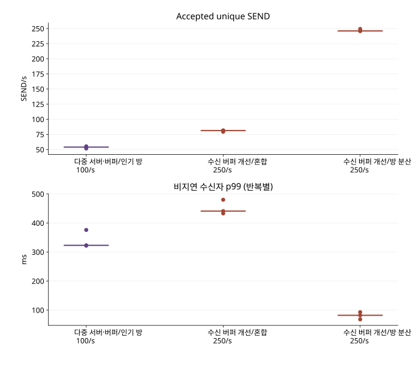
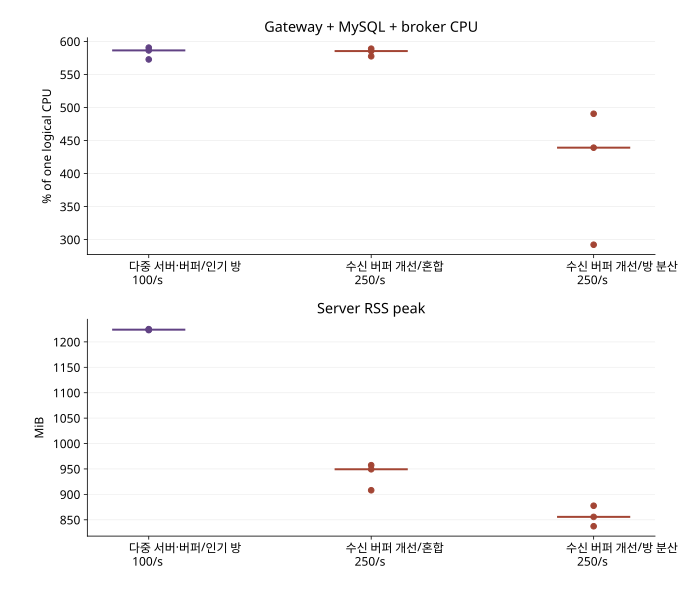
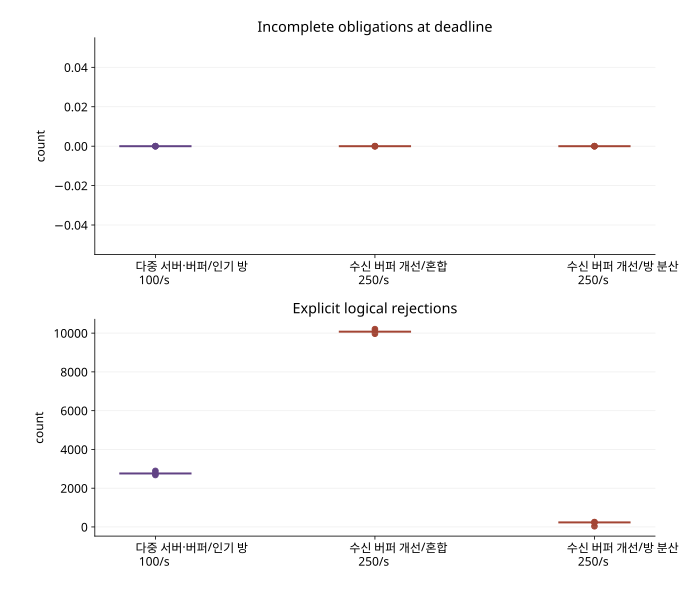
| 구현 / 경로·조건 | 논리 호출 / 저장 / 거절 / 최종 미확정 | 발생부족 지표 p99 / drop(전체) | 저장 응답 / 비지연 수신자 p99(ms) | 미완료 / 프로토콜 오류 | 서버 CPU / RSS |
|---|---|---|---|---|---|
| RabbitMQ·수신 버퍼 개선 / 인기 방 100 건/초 · 60 초 / 반복 1 http · 인기 방 · 256 conn · 100/s · 60s 512B · slow 0 명 · VU 64 · 반복 1 | 6,001 / 3,319 / 2,681 / 1 | 28.0ms / 0 | 131.8 / 323.0 | 0 / 0 | 586.4% / 1224MiB |
| RabbitMQ·수신 버퍼 개선 / 인기 방 100 건/초 · 60 초 / 반복 2 http · 인기 방 · 256 conn · 100/s · 60s 512B · slow 0 명 · VU 64 · 반복 2 | 5,995 / 3,102 / 2,892 / 1 | 89.0ms / 6 | 148.0 / 376.0 | 0 / 0 | 572.7% / 1225MiB |
| RabbitMQ·수신 버퍼 개선 / 인기 방 100 건/초 · 60 초 / 반복 3 http · 인기 방 · 256 conn · 100/s · 60s 512B · slow 0 명 · VU 64 · 반복 3 | 6,001 / 3,241 / 2,760 / 0 | 31.0ms / 0 | 147.2 / 322.0 | 0 / 0 | 590.6% / 1223MiB |
| 수신 버퍼 개선 / 혼합 250 건/초 · 60 초 / 반복 1 http · 인기·일반 혼합 · 500 conn · 250/s · 60s 512B · slow 100 명 · VU 64 · 반복 1 | 14,996 / 4,760 / 10,205 / 31 | 76.0ms / 0 | 178.4 / 480.0 | 0 / 0 | 585.4% / 957MiB |
| 수신 버퍼 개선 / 혼합 250 건/초 · 60 초 / 반복 2 http · 인기·일반 혼합 · 500 conn · 250/s · 60s 512B · slow 100 명 · VU 64 · 반복 2 | 14,895 / 4,900 / 9,968 / 27 | 473.0ms / 99 | 163.0 / 433.0 | 0 / 0 | 577.5% / 908MiB |
| 수신 버퍼 개선 / 혼합 250 건/초 · 60 초 / 반복 3 http · 인기·일반 혼합 · 500 conn · 250/s · 60s 512B · slow 100 명 · VU 64 · 반복 3 | 15,000 / 4,884 / 10,076 / 40 | 72.0ms / 0 | 164.0 / 441.0 | 0 / 0 | 589.0% / 949MiB |
| 수신 버퍼 개선 / 방 분산 250 건/초 · 60 초 / 반복 1 http · 방 분산 · 500 conn · 250/s · 60s 512B · slow 0 명 · VU 64 · 반복 1 | 15,001 / 14,964 / 37 / 0 | 3.0ms / 0 | 20.0 / 68.0 | 0 / 0 | 292.2% / 878MiB |
| 수신 버퍼 개선 / 방 분산 250 건/초 · 60 초 / 반복 2 http · 방 분산 · 500 conn · 250/s · 60s 512B · slow 0 명 · VU 64 · 반복 2 | 15,001 / 14,765 / 236 / 0 | 6.0ms / 0 | 29.0 / 82.0 | 0 / 0 | 439.1% / 837MiB |
| 수신 버퍼 개선 / 방 분산 250 건/초 · 60 초 / 반복 3 http · 방 분산 · 500 conn · 250/s · 60s 512B · slow 0 명 · VU 64 · 반복 3 | 15,001 / 14,747 / 253 / 1 | 6.0ms / 0 | 32.0 / 93.0 | 0 / 0 | 490.5% / 856MiB |
좁은 화면에서는 표를 좌우로 이동할 수 있습니다. 수치와 단위는 원본의 반복별 값을 유지했습니다.
수신 버퍼 개선의 분산 방 250 SEND/s 세 반복은 저장 14,747~14,964 건/분, 정상 수신 p99 68~93ms였지만 마지막 반복의 최종 SEND 미확정 1 건을 남겼다. 혼합 부하는 전달 의무를 모두 마쳤어도 정상 방 p99 323~375ms로 250ms 목표를 넘었다. 따라서 수신 버퍼 개선은 이 장비에서 모든 요청을 250/s로 받아들이는 보편적 용량 보장이 아니다. 수신 버퍼 변경의 직접 효과는 연결 heap이며, 혼합 부하의 더 높은 저장 처리량을 이 변경의 성과로 주장하지 않는다.
상세 비교: 고정한 구현의 독립 반복
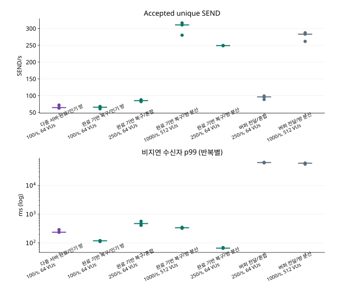
| 구현 / 경로·조건 | 논리 호출 / 저장 / 거절 / 최종 미확정 | 발생부족 지표 p99 / drop(전체) | 저장 응답 / 비지연 수신자 p99(ms) | 미완료 / 프로토콜 오류 | 서버 CPU / RSS |
|---|---|---|---|---|---|
| RabbitMQ·완료 알림 복구 / 인기 방 100 건/초 · 60 초 / 반복 1 http · 인기 방 · 256 conn · 100/s · 60s 512B · slow 0 명 · VU 64 · 반복 1 | 6,001 / 3,761 / 2,240 / 0 | 30.0ms / 0 | 111.0 / 290.0 | 0 / 0 | 558.9% / 1234MiB |
| RabbitMQ·완료 알림 복구 / 인기 방 100 건/초 · 60 초 / 반복 2 http · 인기 방 · 256 conn · 100/s · 60s 512B · slow 0 명 · VU 64 · 반복 2 | 6,000 / 4,305 / 1,695 / 0 | 20.0ms / 0 | 87.0 / 237.0 | 0 / 0 | 544.0% / 1243MiB |
| RabbitMQ·완료 알림 복구 / 인기 방 100 건/초 · 60 초 / 반복 3 http · 인기 방 · 256 conn · 100/s · 60s 512B · slow 0 명 · VU 64 · 반복 3 | 5,996 / 3,859 / 2,137 / 0 | 71.0ms / 5 | 93.0 / 237.0 | 0 / 0 | 546.8% / 1235MiB |
| 완료 알림 기반 복구 / 인기 방 100 건/초 · 60 초 / 반복 1 http · 인기 방 · 256 conn · 100/s · 60s 512B · slow 0 명 · VU 64 · 반복 1 | 6,001 / 4,055 / 1,946 / 0 | 15.0ms / 0 | 46.5 / 112.0 | 0 / 0 | 441.8% / 880MiB |
| 완료 알림 기반 복구 / 인기 방 100 건/초 · 60 초 / 반복 2 http · 인기 방 · 256 conn · 100/s · 60s 512B · slow 0 명 · VU 64 · 반복 2 | 6,001 / 3,925 / 2,076 / 0 | 16.0ms / 0 | 47.0 / 119.0 | 0 / 0 | 447.1% / 877MiB |
| 완료 알림 기반 복구 / 인기 방 100 건/초 · 60 초 / 반복 3 http · 인기 방 · 256 conn · 100/s · 60s 512B · slow 0 명 · VU 64 · 반복 3 | 6,001 / 3,648 / 2,353 / 0 | 15.0ms / 0 | 46.5 / 121.0 | 0 / 0 | 434.4% / 890MiB |
| 완료 알림 기반 복구 / 혼합 250 건/초 · 60 초 / 반복 1 http · 인기·일반 혼합 · 500 conn · 250/s · 60s 512B · slow 100 명 · VU 64 · 반복 1 | 15,009 / 5,256 / 9,729 / 24 | 63.0ms / 0 | 154.4 / 474.0 | 0 / 0 | 577.5% / 1044MiB |
| 완료 알림 기반 복구 / 혼합 250 건/초 · 60 초 / 반복 2 http · 인기·일반 혼합 · 500 conn · 250/s · 60s 512B · slow 100 명 · VU 64 · 반복 2 | 15,000 / 5,102 / 9,881 / 17 | 64.0ms / 0 | 141.0 / 411.0 | 0 / 0 | 581.2% / 949MiB |
| 완료 알림 기반 복구 / 혼합 250 건/초 · 60 초 / 반복 3 http · 인기·일반 혼합 · 500 conn · 250/s · 60s 512B · slow 100 명 · VU 64 · 반복 3 | 15,000 / 4,932 / 10,038 / 30 | 78.0ms / 0 | 170.0 / 568.3 | 0 / 0 | 586.1% / 985MiB |
| 완료 알림 기반 복구 / 방 분산 1000 건/초 · 60 초 / 반복 1 http · 방 분산 · 500 conn · 1000/s · 60s 512B · slow 0 명 · VU 512 · 반복 1 | 60,001 / 16,792 / 43,065 / 144 | 54.0ms / 0 | 255.0 / 349.0 | 0 / 0 | 621.8% / 1022MiB |
| 완료 알림 기반 복구 / 방 분산 1000 건/초 · 60 초 / 반복 2 http · 방 분산 · 500 conn · 1000/s · 60s 512B · slow 0 명 · VU 512 · 반복 2 | 60,001 / 18,973 / 40,847 / 181 | 49.0ms / 0 | 228.0 / 324.0 | 0 / 0 | 616.2% / 1023MiB |
| 완료 알림 기반 복구 / 방 분산 1000 건/초 · 60 초 / 반복 3 http · 방 분산 · 500 conn · 1000/s · 60s 512B · slow 0 명 · VU 512 · 반복 3 | 60,002 / 18,628 / 41,212 / 162 | 44.0ms / 0 | 228.0 / 337.0 | 0 / 0 | 624.0% / 1036MiB |
| 완료 알림 기반 복구 / 방 분산 250 건/초 · 60 초 / 반복 1 http · 방 분산 · 500 conn · 250/s · 60s 512B · slow 0 명 · VU 64 · 반복 1 | 15,000 / 14,930 / 70 / 0 | 5.0ms / 0 | 20.0 / 66.0 | 0 / 0 | 408.3% / 935MiB |
| 완료 알림 기반 복구 / 방 분산 250 건/초 · 60 초 / 반복 2 http · 방 분산 · 500 conn · 250/s · 60s 512B · slow 0 명 · VU 64 · 반복 2 | 15,001 / 14,924 / 77 / 0 | 5.0ms / 0 | 23.0 / 69.0 | 0 / 0 | 439.0% / 977MiB |
| 완료 알림 기반 복구 / 방 분산 250 건/초 · 60 초 / 반복 3 http · 방 분산 · 500 conn · 250/s · 60s 512B · slow 0 명 · VU 64 · 반복 3 | 15,002 / 14,952 / 50 / 0 | 5.0ms / 0 | 20.0 / 66.0 | 0 / 0 | 404.9% / 937MiB |
| 버퍼 기반 전달 / 혼합 250 건/초 · 60 초 / 반복 1 http · 인기·일반 혼합 · 500 conn · 250/s · 60s 512B · slow 100 명 · VU 64 · 반복 1 | 15,001 / 5,310 / 9,654 / 37 | 53.0ms / 0 | 180.0 / 63819.0 | 334,893 / 0 | 604.5% / 971MiB |
| 버퍼 기반 전달 / 혼합 250 건/초 · 60 초 / 반복 2 http · 인기·일반 혼합 · 500 conn · 250/s · 60s 512B · slow 100 명 · VU 64 · 반복 2 | 15,000 / 5,933 / 9,028 / 39 | 19.0ms / 0 | 185.7 / 61482.8 | 742,662 / 0 | 609.1% / 978MiB |
| 버퍼 기반 전달 / 혼합 250 건/초 · 60 초 / 반복 3 http · 인기·일반 혼합 · 500 conn · 250/s · 60s 512B · slow 100 명 · VU 64 · 반복 3 | 15,001 / 5,777 / 9,178 / 46 | 35.0ms / 0 | 198.0 / 62777.0 | 667,620 / 0 | 607.6% / 986MiB |
| 버퍼 기반 전달 / 방 분산 1000 건/초 · 60 초 / 반복 1 http · 방 분산 · 500 conn · 1000/s · 60s 512B · slow 0 명 · VU 512 · 반복 1 | 60,001 / 16,976 / 42,667 / 358 | 37.0ms / 0 | 282.0 / 55264.8 | 0 / 0 | 616.9% / 1000MiB |
| 버퍼 기반 전달 / 방 분산 1000 건/초 · 60 초 / 반복 2 http · 방 분산 · 500 conn · 1000/s · 60s 512B · slow 0 명 · VU 512 · 반복 2 | 60,001 / 15,688 / 44,083 / 230 | 33.0ms / 0 | 310.0 / 59647.1 | 7,197 / 0 | 618.7% / 954MiB |
| 버퍼 기반 전달 / 방 분산 1000 건/초 · 60 초 / 반복 3 http · 방 분산 · 500 conn · 1000/s · 60s 512B · slow 0 명 · VU 512 · 반복 3 | 59,978 / 17,219 / 42,554 / 205 | 16.0ms / 0 | 294.0 / 59820.0 | 16,854 / 0 | 618.8% / 958MiB |
좁은 화면에서는 표를 좌우로 이동할 수 있습니다. 수치와 단위는 원본의 반복별 값을 유지했습니다.
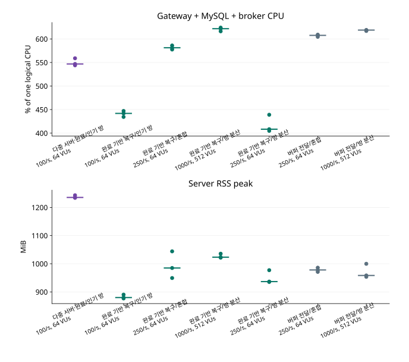
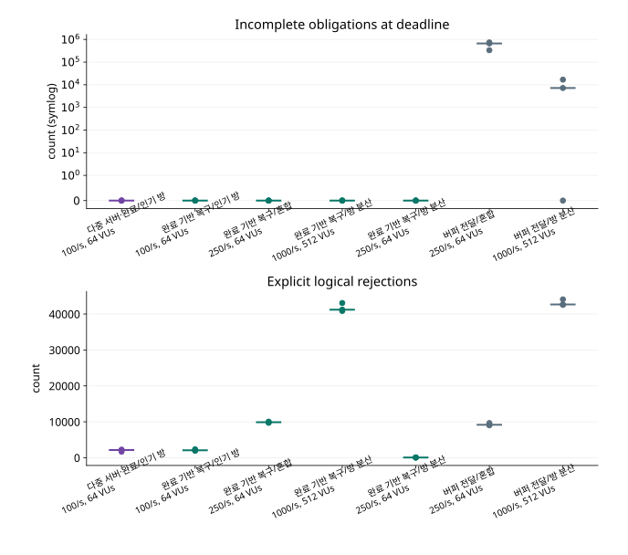
상세 비교: 앞선 대안과 실패한 실행
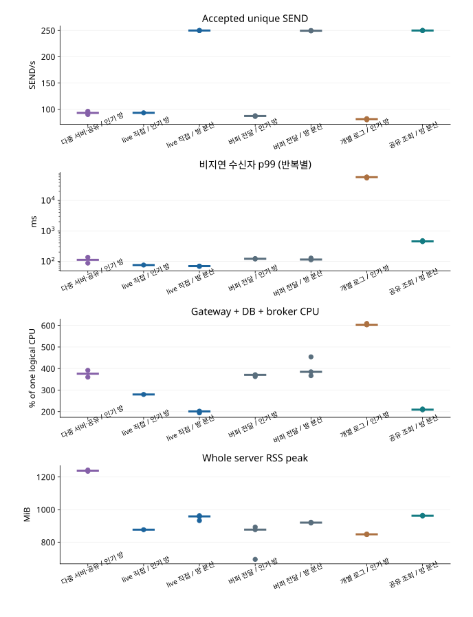
| 구현 / 경로·조건 | 논리 호출 / 저장 / 거절 / 최종 미확정 | 발생부족 지표 p99 / drop(전체) | 저장 응답 / 비지연 수신자 p99(ms) | 미완료 / 프로토콜 오류 | 서버 CPU / RSS |
|---|---|---|---|---|---|
| RabbitMQ·공유 복구 / 인기 방 100 건/초 · 60 초 / 반복 1 http · 인기 방 · 256 conn · 100/s · 60s 512B · slow 0 명 · VU 64 · 반복 1 | 6,000 / 5,774 / 226 / 0 | 12.0ms / 0 | 28.0 / 87.0 | 0 / 0 | 360.0% / 1243MiB |
| RabbitMQ·공유 복구 / 인기 방 100 건/초 · 60 초 / 반복 2 http · 인기 방 · 256 conn · 100/s · 60s 512B · slow 0 명 · VU 64 · 반복 2 | 6,001 / 5,397 / 604 / 0 | 16.0ms / 0 | 41.0 / 135.0 | 0 / 0 | 392.0% / 1235MiB |
| 정상 live 직접 전달 / 인기 방 100 건/초 · 60 초 / 반복 1 http · 인기 방 · 256 conn · 100/s · 60s 512B · slow 0 명 · VU 64 · 반복 1 | 6,001 / 5,595 / 406 / 0 | 10.0ms / 0 | 19.1 / 75.0 | 0 / 0 | 279.6% / 876MiB |
| 정상 live 직접 전달 / 방 분산 250 건/초 · 60 초 / 반복 1 http · 방 분산 · 500 conn · 250/s · 60s 512B · slow 0 명 · VU 64 · 반복 1 | 15,000 / 14,987 / 13 / 0 | 5.0ms / 0 | 17.0 / 69.0 | 0 / 0 | 201.9% / 932MiB |
| 정상 live 직접 전달 / 방 분산 250 건/초 · 60 초 / 반복 2 http · 방 분산 · 500 conn · 250/s · 60s 512B · slow 0 명 · VU 64 · 반복 2 | 15,001 / 14,995 / 6 / 0 | 5.0ms / 0 | 15.0 / 69.0 | 0 / 0 | 200.9% / 963MiB |
| 정상 live 직접 전달 / 방 분산 250 건/초 · 60 초 / 반복 3 http · 방 분산 · 500 conn · 250/s · 60s 512B · slow 0 명 · VU 64 · 반복 3 | 15,001 / 15,001 / 0 / 0 | 5.0ms / 0 | 14.0 / 68.0 | 0 / 0 | 194.2% / 958MiB |
| 버퍼 기반 전달 / 인기 방 100 건/초 · 60 초 / 반복 1 http · 인기 방 · 256 conn · 100/s · 60s 512B · slow 0 명 · VU 64 · 반복 1 | 6,000 / 5,182 / 818 / 0 | 13.0ms / 0 | 25.0 / 119.0 | 0 / 0 | 362.8% / 893MiB |
| 버퍼 기반 전달 / 인기 방 100 건/초 · 60 초 / 반복 2 http · 인기 방 · 256 conn · 100/s · 60s 512B · slow 0 명 · VU 64 · 반복 2 | 6,001 / 5,234 / 767 / 0 | 13.0ms / 0 | 24.0 / 122.0 | 0 / 0 | 370.6% / 877MiB |
| 버퍼 기반 전달 / 인기 방 100 건/초 · 60 초 / 반복 3 http · 인기 방 · 256 conn · 100/s · 60s 512B · slow 0 명 · VU 64 · 반복 3 | 6,000 / 5,259 / 741 / 0 | 15.0ms / 0 | 22.0 / 121.0 | 0 / 0 | 370.9% / 694MiB |
| 버퍼 기반 전달 / 방 분산 250 건/초 · 60 초 / 반복 1 http · 방 분산 · 500 conn · 250/s · 60s 512B · slow 0 명 · VU 64 · 반복 1 | 15,000 / 14,994 / 6 / 0 | 4.0ms / 0 | 16.0 / 111.0 | 0 / 0 | 366.9% / 922MiB |
| 버퍼 기반 전달 / 방 분산 250 건/초 · 60 초 / 반복 2 http · 방 분산 · 500 conn · 250/s · 60s 512B · slow 0 명 · VU 64 · 반복 2 | 15,001 / 14,969 / 23 / 9 | 6.0ms / 0 | 17.0 / 114.0 | 0 / 0 | 384.8% / 918MiB |
| 버퍼 기반 전달 / 방 분산 250 건/초 · 60 초 / 반복 3 http · 방 분산 · 500 conn · 250/s · 60s 512B · slow 0 명 · VU 64 · 반복 3 | 15,001 / 14,962 / 27 / 12 | 7.0ms / 0 | 18.0 / 127.0 | 0 / 0 | 454.3% / 920MiB |
| 수신자별 로그 전달 / 인기 방 100 건/초 · 60 초 / 반복 1 http · 인기 방 · 256 conn · 100/s · 60s 512B · slow 0 명 · VU 64 · 반복 1 | 6,001 / 4,794 / 1,207 / 0 | 29.0ms / 0 | 50.0 / 54972.0 | 48,884 / 0 | 609.2% / 850MiB |
| 수신자별 로그 전달 / 인기 방 100 건/초 · 60 초 / 반복 2 http · 인기 방 · 256 conn · 100/s · 60s 512B · slow 0 명 · VU 64 · 반복 2 | 6,001 / 4,928 / 1,073 / 0 | 28.0ms / 0 | 42.0 / 58626.6 | 91,929 / 0 | 603.2% / 846MiB |
| 수신자별 로그 전달 / 인기 방 100 건/초 · 60 초 / 반복 3 http · 인기 방 · 256 conn · 100/s · 60s 512B · slow 0 명 · VU 64 · 반복 3 | 6,001 / 4,875 / 1,126 / 0 | 28.0ms / 0 | 44.0 / 59450.0 | 111,173 / 0 | 603.0% / 848MiB |
| 공유 조회·표현 캐시 / 방 분산 250 건/초 · 60 초 / 반복 1 http · 방 분산 · 500 conn · 250/s · 60s 512B · slow 0 명 · VU 64 · 반복 1 | 15,001 / 14,995 / 6 / 0 | 3.0ms / 0 | 12.0 / 451.0 | 0 / 0 | 208.7% / 965MiB |
| 공유 조회·표현 캐시 / 방 분산 250 건/초 · 60 초 / 반복 2 http · 방 분산 · 500 conn · 250/s · 60s 512B · slow 0 명 · VU 64 · 반복 2 | 15,000 / 14,997 / 3 / 0 | 2.0ms / 0 | 12.0 / 444.0 | 0 / 0 | 209.1% / 962MiB |
| 공유 조회·표현 캐시 / 방 분산 250 건/초 · 60 초 / 반복 3 http · 방 분산 · 500 conn · 250/s · 60s 512B · slow 0 명 · VU 64 · 반복 3 | 15,000 / 14,999 / 1 / 0 | 3.0ms / 0 | 11.0 / 476.0 | 0 / 0 | 212.0% / 961MiB |
좁은 화면에서는 표를 좌우로 이동할 수 있습니다. 수치와 단위는 원본의 반복별 값을 유지했습니다.
집계 미완료 실행과 실패 원인
아래 실행은 시작·발생·종료 정체나 환경 준비 실패로 필요한 원본이 완성되지 않아 누락된 값은 미수집으로 표시했다. 특히 4,000 연결 GC 정체는 별도 실패 분석과 개선으로 이어졌다.
| 보존 실행 | 없는 완결 자료 | 처리 |
|---|---|---|
| 완료 알림 기반 복구 / 방 분산 0 건/초 · 30 초 / 탐색·진단 | audit.json, k6-summary.json, server-metrics.json | 완결 판정 불가·통과로 세지 않음 |
| 정상 live 직접 전달 / 부하 측정 / 확인 | plan.json, audit.json, k6-summary.json, server-metrics.json | 완결 판정 불가·통과로 세지 않음 |
| 수신 버퍼 개선·단계 계측 / 부하 측정 / 탐색 | plan.json, audit.json, k6-summary.json, server-metrics.json | 완결 판정 불가·통과로 세지 않음 |
| 수신 버퍼 개선·단계 계측 / 혼합 250 건/초 · 30 초 / 탐색·진단 | audit.json, server-metrics.json | 완결 판정 불가·통과로 세지 않음 |
| 소켓 쓰기 배치 / 동일 로그 복구 / 확인 | plan.json, audit.json, k6-summary.json, server-metrics.json | 완결 판정 불가·통과로 세지 않음 |
좁은 화면에서는 표를 좌우로 이동할 수 있습니다. 수치와 단위는 원본의 반복별 값을 유지했습니다.
메모리 수신과 별도로 확인한 영속 적용
이 표는 SQLite FULL commit 경로다. 위 k6 메모리 수신과 같은 성능 지표로 합치지 않는다. 각 실행의 clock-bridge.json은 Python commit의 monotonic 시각과 k6 Unix 시각을 연결한 측정 오차 구간을 남긴다. 입력을 기록한 실행의 input-storage-audit.json은 SEND hash·receipt·message·outbox를 대조한다.
| 실행 | 계약 | cursor / 기대 | DB와 완전 일치 | 측정 commit p99(ms) | 측정 미완료 | 진단 events drop |
|---|---|---|---|---|---|---|
| 완료 알림 기반 복구 / 인기 방 250 건/초 · 60 초 / 탐색·진단 | SQLite FULL atomic commit before APPLIED | 5584 / 5584 | True | 134.45056640625 | 0 | 1776 |
| 완료 알림 기반 복구 / 인기 방 250 건/초 · 60 초 / 탐색·진단 | SQLite FULL atomic commit before APPLIED | 5584 / 5584 | True | 139.407001953125 | 0 | 1792 |
| 완료 알림 기반 복구 / 인기 방 250 건/초 · 60 초 / 탐색·진단 | SQLite FULL atomic commit before APPLIED | 5584 / 5584 | True | 147.91293945312498 | 0 | 1786 |
| 완료 알림 기반 복구 / 인기 방 250 건/초 · 60 초 / 탐색·진단 | SQLite FULL atomic commit before APPLIED | 5584 / 5584 | True | 148.65482421874998 | 0 | 1794 |
| 소켓 쓰기 배치 / 인기 방 250 건/초 · 60 초 / 탐색·진단 | SQLite FULL atomic commit before APPLIED | 5525 / 5525 | True | 183.66658203125004 | 0 | 1731 |
| 소켓 쓰기 배치 / 인기 방 250 건/초 · 60 초 / 탐색·진단 | SQLite FULL atomic commit before APPLIED | 5525 / 5525 | True | 192.36297119140653 | 0 | 1732 |
| 소켓 쓰기 배치 / 인기 방 250 건/초 · 60 초 / 탐색·진단 | SQLite FULL atomic commit before APPLIED | 5525 / 5525 | True | 196.00826904296937 | 0 | 1734 |
| 소켓 쓰기 배치 / 인기 방 250 건/초 · 60 초 / 탐색·진단 | SQLite FULL atomic commit before APPLIED | 5525 / 5525 | True | 195.10560302734376 | 0 | 1736 |
| 공유 조회·표현 캐시 / 인기 방 100 건/초 · 60 초 / 탐색·진단 | SQLite FULL atomic commit before APPLIED | 6083 / 6083 | True | 이전 실행 미계측 | 미계측 | 3926 |
| 공유 조회·표현 캐시 / 인기 방 100 건/초 · 60 초 / 탐색·진단 | SQLite FULL atomic commit before APPLIED | 6083 / 6083 | True | 이전 실행 미계측 | 미계측 | 3931 |
좁은 화면에서는 표를 좌우로 이동할 수 있습니다. 수치와 단위는 원본의 반복별 값을 유지했습니다.
영속 하네스의 처리 비용과 한계
같은 k6 생성 로그를 다시 읽는 별도 진단이다. 수신기 수를 1→4→16 으로 늘렸을 때 총 commit 처리량과 하네스·gateway CPU,128 개 상한 frame queue를 기록했다. 이 값은 해당 수신 하네스 구성에서 측정한 처리량으로 동기 commit·스레드·원장 기록 비용을 포함하며, 디스크와 GIL의 기여도는 분리 측정하지 않았다. 새 SEND 처리량과도 다른 경로다.
| 실행 | 수신기 | 정확한 commit | 합계 commit/s | 하네스 CPU% | gateway CPU% | frame queue 최대 | 모든 원장 일치 |
|---|---|---|---|---|---|---|---|
| 기능 검증 / 영속 적용 / 확인 | 1 | 4836 | 1105.4 | 69.1 | 28.6 | 14 | True |
| 기능 검증 / 영속 적용 / 확인 | 4 | 19344 | 1513.5 | 189.9 | 46.6 | 14 | True |
| 기능 검증 / 영속 적용 / 확인 | 16 | 77376 | 1312.5 | 241.8 | 46.3 | 16 | True |
좁은 화면에서는 표를 좌우로 이동할 수 있습니다. 수치와 단위는 원본의 반복별 값을 유지했습니다.
수신기 1 개에서 4 개로 늘리면 1,105→1,513 commit/s였지만 16 개에서는 1,313 commit/s로 감소했다. 동시에 gateway CPU 평균은 약 29→47→46%여서 이 실행의 제한을 gateway의 CPU 최대라고 부를 수 없다. 하네스 CPU·동기 commit·동일 디스크·JSONL 기록이 포함된 결과다. frame queue 최대 14~16 으로 128 상한에는 닿지 않았고 진단 events는 포화 후 drop돼도 실제 projection·cursor가 마지막까지 일치했다.
완료 표본의 분포와 종료 기한의 분모
p50/p95/p99 는 k6 원본 Trend summary가 산출한 완료 표본의 값이며, 개별 transport 지연 전량을 별도 JSON으로 저장하지 않았으므로 summary만으로 독립적인 quantile 재계산은 할 수 없다. SQLite 경로에는 실제 commit 원장이 따로 있다. 종료 완료율은 워밍업부터 저장된 모든 메시지의 예정 의무를 대상으로 하며, 측정-origin 정상 수신의 지연 분모와 다르다.
| 실행 | STORED p50 / p95 / p99 ms | 정상 transport p50 / p95 / p99 ms | 종료 감사 완료율 / 전체 의무 | 송신 종료 뒤 감사 구간 |
|---|---|---|---|---|
| RabbitMQ·완료 알림 복구 / 인기 방 100 건/초 · 60 초 / 반복 1 | 19.0 / 68.0 / 111.0 | 99.0 / 218.0 / 290.0 | 100.0000% / 1117440 | 15 초 |
| RabbitMQ·완료 알림 복구 / 인기 방 100 건/초 · 60 초 / 반복 2 | 17.0 / 50.0 / 87.0 | 71.0 / 161.0 / 237.0 | 100.0000% / 1283328 | 15 초 |
| RabbitMQ·완료 알림 복구 / 인기 방 100 건/초 · 60 초 / 반복 3 | 19.0 / 60.0 / 93.0 | 87.0 / 180.0 / 237.0 | 100.0000% / 1176320 | 15 초 |
| 완료 알림 기반 복구 / 인기 방 100 건/초 · 60 초 / 반복 1 | 11.0 / 33.0 / 46.5 | 57.0 / 93.0 / 112.0 | 100.0000% / 1230848 | 15 초 |
| 완료 알림 기반 복구 / 인기 방 100 건/초 · 60 초 / 반복 2 | 11.0 / 35.0 / 47.0 | 58.0 / 98.0 / 119.0 | 100.0000% / 1202176 | 15 초 |
| 완료 알림 기반 복구 / 인기 방 100 건/초 · 60 초 / 반복 3 | 13.0 / 34.0 / 46.5 | 56.0 / 94.0 / 121.0 | 100.0000% / 1126656 | 15 초 |
| 완료 알림 기반 복구 / 혼합 250 건/초 · 60 초 / 반복 1 | 28.0 / 112.0 / 154.4 | 150.0 / 320.0 / 474.0 | 100.0000% / 1135159 | 15 초 |
| 완료 알림 기반 복구 / 혼합 250 건/초 · 60 초 / 반복 2 | 30.0 / 105.9 / 141.0 | 138.0 / 296.0 / 411.0 | 100.0000% / 1027244 | 15 초 |
| 완료 알림 기반 복구 / 혼합 250 건/초 · 60 초 / 반복 3 | 33.0 / 126.0 / 170.0 | 165.0 / 351.0 / 568.3 | 100.0000% / 1006155 | 15 초 |
| 완료 알림 기반 복구 / 방 분산 1000 건/초 · 60 초 / 반복 1 | 16.0 / 126.0 / 255.0 | 69.0 / 289.0 / 349.0 | 100.0000% / 303238 | 15 초 |
| 완료 알림 기반 복구 / 방 분산 1000 건/초 · 60 초 / 반복 2 | 14.0 / 107.0 / 228.0 | 66.0 / 271.0 / 324.0 | 100.0000% / 339464 | 15 초 |
| 완료 알림 기반 복구 / 방 분산 1000 건/초 · 60 초 / 반복 3 | 13.0 / 98.0 / 228.0 | 65.0 / 264.0 / 337.0 | 100.0000% / 333455 | 15 초 |
| 완료 알림 기반 복구 / 방 분산 250 건/초 · 60 초 / 반복 1 | 7.0 / 13.0 / 20.0 | 34.0 / 56.0 / 66.0 | 100.0000% / 277676 | 15 초 |
| 완료 알림 기반 복구 / 방 분산 250 건/초 · 60 초 / 반복 2 | 8.0 / 14.0 / 23.0 | 36.0 / 57.0 / 69.0 | 100.0000% / 275850 | 15 초 |
| 완료 알림 기반 복구 / 방 분산 250 건/초 · 60 초 / 반복 3 | 7.0 / 13.0 / 20.0 | 35.0 / 56.0 / 66.0 | 100.0000% / 277402 | 15 초 |
| 버퍼 기반 전달 / 혼합 250 건/초 · 60 초 / 반복 1 | 19.0 / 118.0 / 180.0 | 369.0 / 43399.0 / 63819.0 | 72.8804% / 1234876 | 15 초 |
| 버퍼 기반 전달 / 혼합 250 건/초 · 60 초 / 반복 2 | 12.0 / 109.0 / 185.7 | 789.0 / 43757.4 / 61482.8 | 49.8830% / 1481855 | 15 초 |
| 버퍼 기반 전달 / 혼합 250 건/초 · 60 초 / 반복 3 | 13.0 / 129.0 / 198.0 | 368.0 / 40549.0 / 62777.0 | 53.0992% / 1423473 | 15 초 |
| 버퍼 기반 전달 / 방 분산 1000 건/초 · 60 초 / 반복 1 | 10.0 / 105.2 / 282.0 | 1536.0 / 44819.0 / 55264.8 | 100.0000% / 315293 | 15 초 |
| 버퍼 기반 전달 / 방 분산 1000 건/초 · 60 초 / 반복 2 | 12.0 / 148.0 / 310.0 | 2162.0 / 48633.0 / 59647.1 | 97.5712% / 296319 | 15 초 |
| 버퍼 기반 전달 / 방 분산 1000 건/초 · 60 초 / 반복 3 | 10.0 / 66.0 / 294.0 | 2370.0 / 50653.0 / 59820.0 | 94.7434% / 320623 | 15 초 |
| RabbitMQ·수신 버퍼 개선 / 인기 방 100 건/초 · 60 초 / 반복 1 | 22.0 / 86.0 / 131.8 | 127.0 / 247.0 / 323.0 | 100.0000% / 1004288 | 15 초 |
| RabbitMQ·수신 버퍼 개선 / 인기 방 100 건/초 · 60 초 / 반복 2 | 24.0 / 98.0 / 148.0 | 134.0 / 274.0 / 376.0 | 100.0000% / 945152 | 15 초 |
| RabbitMQ·수신 버퍼 개선 / 인기 방 100 건/초 · 60 초 / 반복 3 | 22.0 / 94.0 / 147.2 | 131.0 / 248.0 / 322.0 | 100.0000% / 990208 | 15 초 |
| 수신 버퍼 개선 / 혼합 250 건/초 · 60 초 / 반복 1 | 36.0 / 140.0 / 178.4 | 172.0 / 341.0 / 480.0 | 100.0000% / 982011 | 15 초 |
| 수신 버퍼 개선 / 혼합 250 건/초 · 60 초 / 반복 2 | 34.0 / 119.0 / 163.0 | 153.0 / 316.0 / 433.0 | 100.0000% / 1016954 | 15 초 |
| 수신 버퍼 개선 / 혼합 250 건/초 · 60 초 / 반복 3 | 34.0 / 125.8 / 164.0 | 161.0 / 320.0 / 441.0 | 100.0000% / 973743 | 15 초 |
| 수신 버퍼 개선 / 방 분산 250 건/초 · 60 초 / 반복 1 | 4.0 / 14.0 / 20.0 | 29.0 / 54.0 / 68.0 | 100.0000% / 281682 | 15 초 |
| 수신 버퍼 개선 / 방 분산 250 건/초 · 60 초 / 반복 2 | 8.0 / 16.0 / 29.0 | 37.0 / 60.0 / 82.0 | 100.0000% / 273422 | 15 초 |
| 수신 버퍼 개선 / 방 분산 250 건/초 · 60 초 / 반복 3 | 9.0 / 17.0 / 32.0 | 39.0 / 64.0 / 93.0 | 100.0000% / 275488 | 15 초 |
| RabbitMQ·완료 알림 복구 / 혼합 250 건/초 · 90 초 / 탐색·진단 | 19.0 / 218.0 / 321.5 | 52749.0 / 80697.0 / 82720.0 | 59.2537% / 2462822 | 15 초 |
| RabbitMQ·수신 버퍼 개선 / 혼합 250 건/초 · 90 초 / 탐색·진단 | 17.0 / 202.0 / 268.2 | 75956.0 / 94171.0 / 100101.0 | 100.0000% / 2737722 | 120 초 |
| 완료 알림 기반 복구 / 인기 방 100 건/초 · 60 초 / 탐색·진단 | 22.5 / 91.0 / 140.1 | 143.0 / 271.0 / 340.0 | 100.0000% / 1330688 | 15 초 |
| 완료 알림 기반 복구 / 인기 방 100 건/초 · 60 초 / 탐색·진단 | 42.0 / 217.0 / 327.4 | 1105.0 / 3149.0 / 4162.0 | 100.0000% / 1619000 | 15 초 |
| 완료 알림 기반 복구 / 인기 방 250 건/초 · 60 초 / 탐색·진단 | 25.0 / 123.7 / 198.0 | 208.0 / 363.0 / 488.0 | 100.0000% / 1344000 | 15 초 |
| 완료 알림 기반 복구 / 인기 방 250 건/초 · 60 초 / 탐색·진단 | 11.0 / 23.0 / 37.1 | 50.0 / 77.0 / 100.0 | 100.0000% / 714752 | 15 초 |
| 완료 알림 기반 복구 / 혼합 250 건/초 · 60 초 / 탐색·진단 | 26.0 / 89.0 / 129.0 | 131.0 / 243.0 / 305.0 | 100.0000% / 1197038 | 15 초 |
| 완료 알림 기반 복구 / 혼합 250 건/초 · 60 초 / 탐색·진단 | 32.0 / 121.0 / 163.8 | 163.0 / 318.0 / 431.0 | 100.0000% / 1041768 | 15 초 |
| 완료 알림 기반 복구 / 혼합 250 건/초 · 60 초 / 탐색·진단 | 39.0 / 168.0 / 227.0 | 223.0 / 469.0 / 747.0 | 100.0000% / 933873 | 15 초 |
| 완료 알림 기반 복구 / 혼합 250 건/초 · 90 초 / 탐색·진단 | 30.0 / 157.0 / 235.5 | 152.0 / 349.0 / 519.0 | 100.0000% / 1501180 | 15 초 |
| 완료 알림 기반 복구 / 혼합 250 건/초 · 90 초 / 탐색·진단 | 11.0 / 81.0 / 128.0 | 45284.0 / 68886.8 / 71872.0 | 67.4193% / 2972594 | 15 초 |
| 완료 알림 기반 복구 / 방 분산 250 건/초 · 60 초 / 탐색·진단 | 23.0 / 49.0 / 74.0 | 49.0 / 80.0 / 102.0 | 100.0000% / 282000 | 15 초 |
| 완료 알림 기반 복구 / 방 분산 250 건/초 · 60 초 / 탐색·진단 | 6.0 / 11.0 / 16.0 | 32.0 / 52.0 / 61.0 | 100.0000% / 281531 | 15 초 |
| 완료 알림 기반 복구 / 방 분산 500 건/초 · 60 초 / 탐색·진단 | 11.0 / 41.0 / 122.0 | 52.0 / 136.0 / 228.0 | 100.0000% / 376252 | 15 초 |
| 완료 알림 기반 복구 / 인기 방 100 건/초 · 60 초 / 발생기 진단 | 43.0 / 257.5 / 337.9 | 686.0 / 1595.0 / 2047.0 | 100.0000% / 1589000 | 15 초 |
| 완료 알림 기반 복구 / 방 분산 500 건/초 · 60 초 / 발생기 진단 | 9.0 / 38.0 / 74.0 | 52.0 / 99.0 / 162.0 | 100.0000% / 421697 | 15 초 |
| 완료 알림 기반 복구 / 방 분산 250 건/초 · 600 초 / 탐색·진단 | 7.0 / 12.0 / 22.0 | 33.0 / 58.0 / 477.4 | 100.0000% / 2421700 | 15 초 |
| 정상 live 직접 전달 / 인기 방 100 건/초 · 30 초 / 탐색·진단 | 13.0 / 60.0 / 116.4 | 109.0 / 242.0 / 330.0 | 100.0000% / 1131008 | 15 초 |
| 정상 live 직접 전달 / 인기 방 100 건/초 · 30 초 / 탐색·진단 | 13.0 / 79.0 / 152.2 | 4997.0 / 14351.0 / 15638.0 | 99.2151% / 1893000 | 15 초 |
| 정상 live 직접 전달 / 혼합 250 건/초 · 60 초 / 탐색·진단 | 5.0 / 18.0 / 36.0 | 33061.0 / 58910.0 / 62298.0 | 25.8710% / 3686486 | 15 초 |
| 정상 live 직접 전달 / 혼합 250 건/초 · 60 초 / 탐색·진단 | 3.0 / 8.0 / 15.0 | 30869.0 / 61477.7 / 65129.0 | 19.9247% / 4326102 | 15 초 |
| 정상 live 직접 전달 / 혼합 250 건/초 · 90 초 / 탐색·진단 | 5.0 / 19.0 / 35.0 | 53895.0 / 81293.0 / 88182.0 | 24.0513% / 5890991 | 15 초 |
| 정상 live 직접 전달 / 혼합 250 건/초 · 90 초 / 탐색·진단 | 10.0 / 56.0 / 109.2 | 61234.0 / 81292.0 / 87237.0 | 38.7850% / 3136312 | 15 초 |
| 정상 live 직접 전달 / 방 분산 500 건/초 · 30 초 / 탐색·진단 | 6.0 / 17.0 / 26.0 | 656.0 / 1386.0 / 1585.0 | 100.0000% / 298149 | 15 초 |
| 정상 live 직접 전달 / 방 분산 1000 건/초 · 30 초 / 탐색·진단 | 9.0 / 36.0 / 79.0 | 917.0 / 2388.0 / 3131.0 | 100.0000% / 351352 | 15 초 |
| 정상 live 직접 전달 / 방 분산 250 건/초 · 30 초 / 탐색·진단 | 27.0 / 54.0 / 66.0 | 63.0 / 100.0 / 112.0 | 100.0000% / 161000 | 15 초 |
| 정상 live 직접 전달 / 방 분산 250 건/초 · 30 초 / 탐색·진단 | 3.0 / 10.0 / 15.1 | 34.0 / 56.0 / 67.0 | 100.0000% / 161116 | 15 초 |
| 수신 버퍼 개선 / 혼합 250 건/초 · 90 초 / 탐색·진단 | 13.0 / 159.0 / 218.4 | 55034.0 / 71763.0 / 75640.0 | 100.0000% / 2341596 | 120 초 |
| 수신 버퍼 개선 / 방 분산 0 건/초 · 60 초 / 탐색·진단 | 0.0 / 0.0 / 0.0 | 0.0 / 0.0 / 0.0 | 유휴: 전달 의무 없음 | 15 초 |
| 수신 버퍼 개선 / 방 분산 0 건/초 · 60 초 / 탐색·진단 | 0.0 / 0.0 / 0.0 | 0.0 / 0.0 / 0.0 | 유휴: 전달 의무 없음 | 15 초 |
| 수신 버퍼 개선 / 방 분산 0 건/초 · 60 초 / 탐색·진단 | 0.0 / 0.0 / 0.0 | 0.0 / 0.0 / 0.0 | 유휴: 전달 의무 없음 | 15 초 |
| 수신 버퍼 개선 / 방 분산 250 건/초 · 600 초 / 탐색·진단 | 5.0 / 11.0 / 21.0 | 30.0 / 56.0 / 391.0 | 100.0000% / 2419700 | 15 초 |
좁은 화면에서는 표를 좌우로 이동할 수 있습니다. 수치와 단위는 원본의 반복별 값을 유지했습니다.
30 초 실패와 이후 진전을 분리한 복구 진단
원래 짧은 감사에서 실패한 재접속 부하를 새 수신 버퍼 개선/RabbitMQ·수신 버퍼 개선 소스에서 재검증했다. 신규 송신 종료+30 초의 미완료를 고정하고 이후 120 초까지 유한하게 관찰했다. 처리 여력 회복 이후 완료됐지만 30 초 SLO 판정은 실패다. raw deadline record에는 실제 timer 실행 시각과 예정 시각이 함께 있어 event-loop 지연도 확인할 수 있다.
| 실행 | 30 초 시점 미완료 | 추가 관찰 종료 미완료 | 마지막 실제 수신−송신창 종료(s) | 목표 통과 |
|---|---|---|---|---|
| RabbitMQ·수신 버퍼 개선 / 혼합 250 건/초 · 90 초 / 탐색·진단 | 865731 | 0 | 81.053 | False |
| 수신 버퍼 개선 / 혼합 250 건/초 · 90 초 / 탐색·진단 | 420895 | 0 | 53.123 | False |
| 소켓 쓰기 배치 / 혼합 250 건/초 · 90 초 / 탐색·진단 | 198979 | 0 | 39.268 | False |
| 소켓 쓰기 배치 / 혼합 250 건/초 · 600 초 / 탐색·진단 | 0 | 0 | 15.331 | False |
좁은 화면에서는 표를 좌우로 이동할 수 있습니다. 수치와 단위는 원본의 반복별 값을 유지했습니다.
수신 버퍼 개선/RabbitMQ·수신 버퍼 개선은 30 초 시점 각각 420,895/865,731 건이 남았고, 마지막 수신은 신규 송신 종료후 53.123/81.053 초였다. 두 경우 모두 400 개 재접속 수신자의 고정 H 완료가 30 초를 넘었다. 신규 메시지가 계속 들어오는 동안 정상 방도 진행했지만 p99 약 396/775ms로 250ms를 넘었다. 종료 뒤 전량 완료·outbox0 은 실제 복구 진전이며 설정한 복구·정상 방 지연 목표 통과를 대신하지 않는다.
10 분 재접속에서 남은 상태
수신 버퍼 개선의 500 연결·250/s·30 초 간격 재접속은 총 10,500 connection event를 만들었고 DB150,020 건/수신의무 2,419,700 건을 모두 마쳤다. 가용한 원본에서 21.6 초·315.9 초·625.6 초의 JVM handle은 1,263·1,273·1,208, OS thread는 80·80·79 였다. heap은 GC에 따라 변동했고 종료 직전 GC 누적은 2,092ms였다. 세 표본만으로 장기 메모리 누수 여부를 판단할 수 없어 전체 시계열도 함께 확인했다.
종료 TCP snapshot에는 서버 listen1, DB established12, close-wait1 이 남고 수신 WebSocket500 개의 established 연결은 없었다. 관측 HTTP 종료와 겹친 한 순간을 모든 TCP 상태가 0 인 증거로 쓰지 않는다. 실제 단독 비수신 TCP 회수는 별도 장애 시험에서 종료 전후 OS 상태로 검사했다. 이 soak의 정상 수신 p99 391ms·SEND미확정 11·drop9 는 그대로 미달이다.
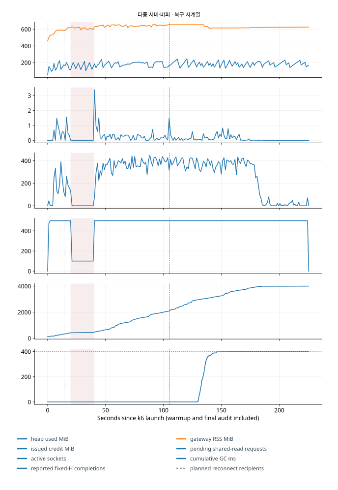
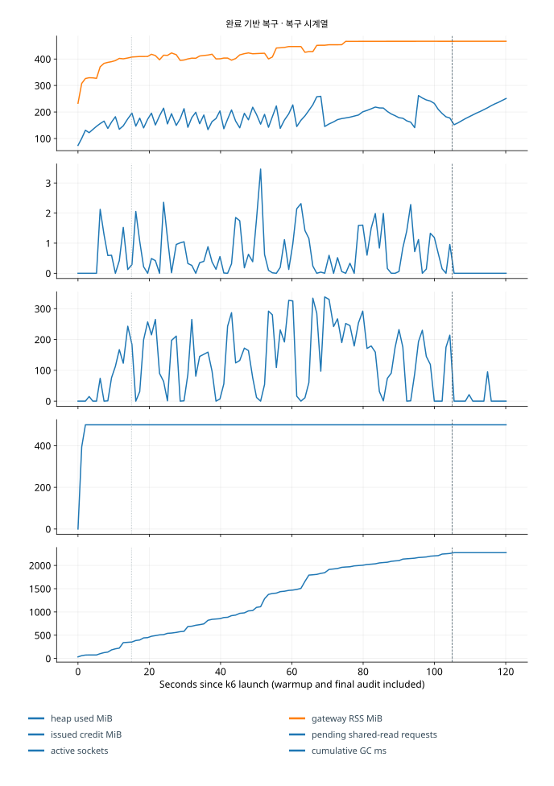
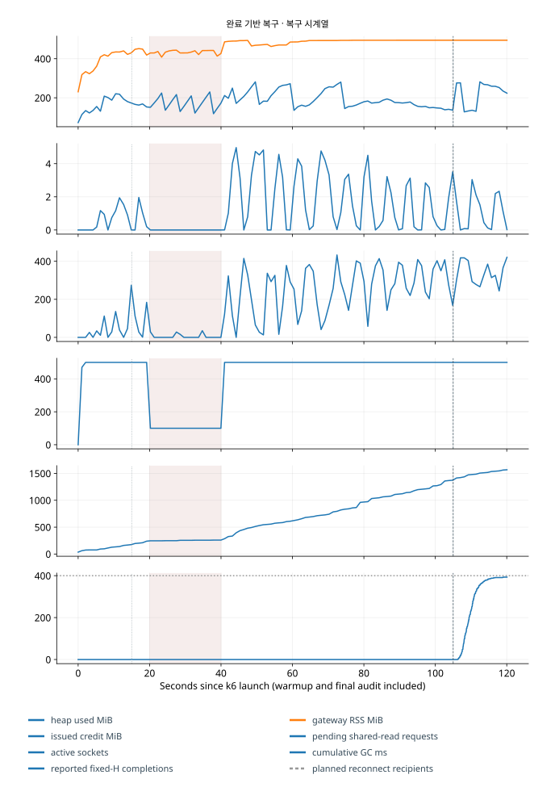
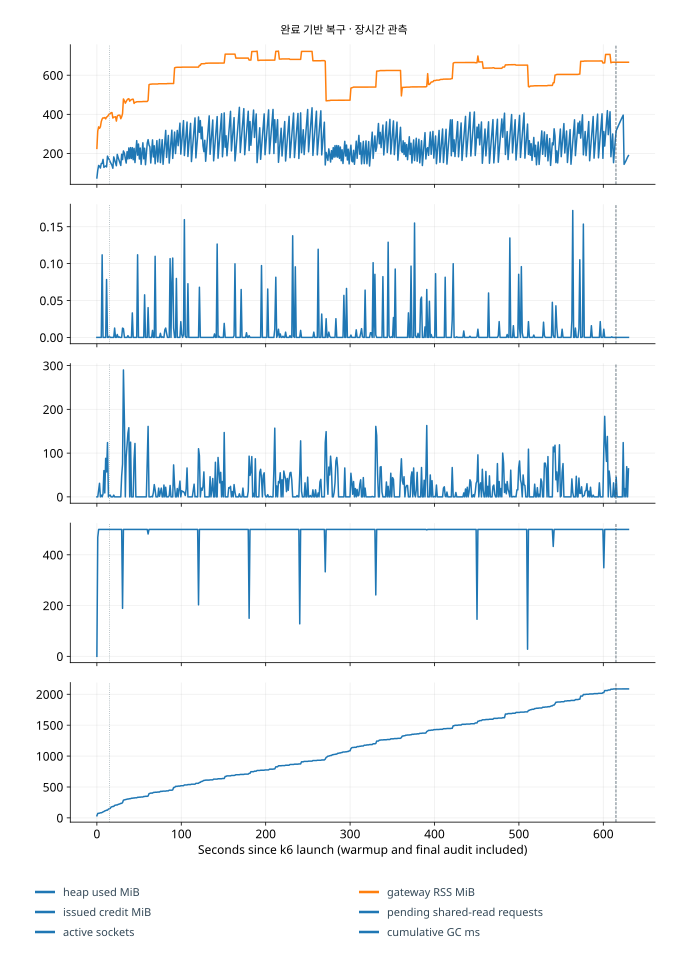
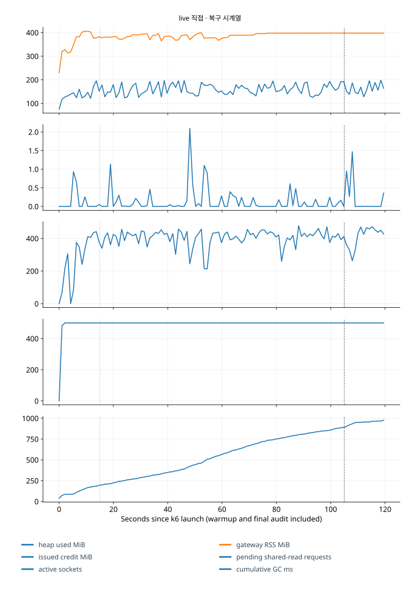
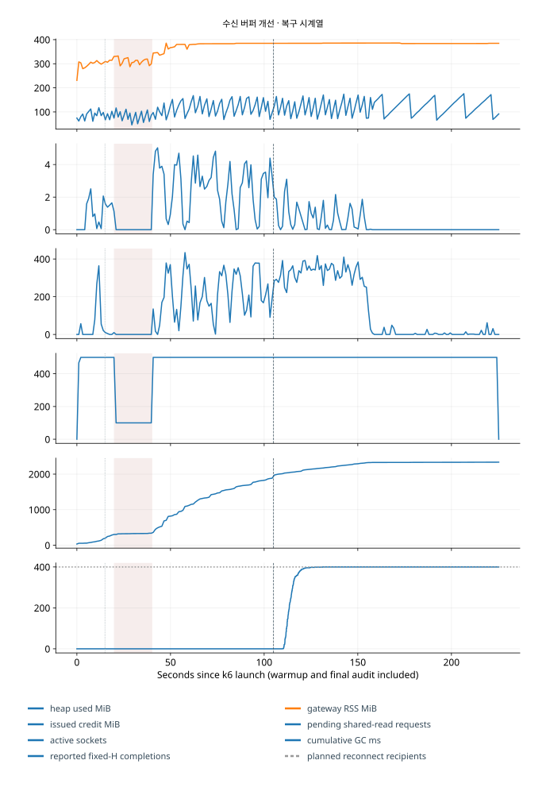
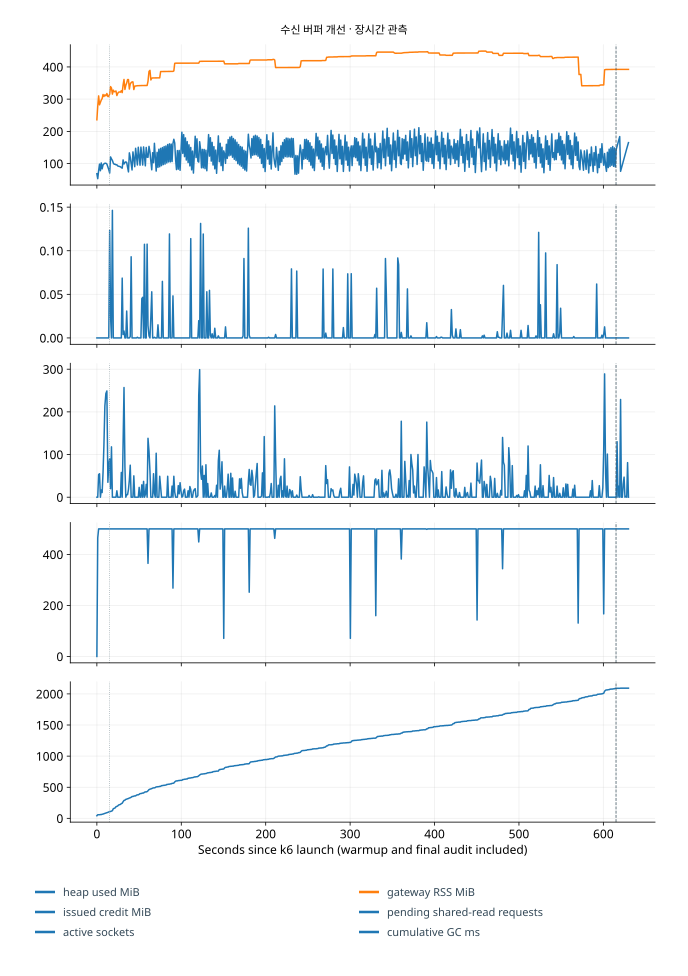
같은 장비 비교의 해석 한계
실행별 집계, 목표·예산, 비교 조건과 개정 이유를 함께 읽어야 한다. RabbitMQ·수신 버퍼 개선의 한 실행은 시작 환경을 기록한 뒤 디스크 계측 코드가 바뀌었다. 실제 실행 코드와 기록의 차이를 검토했고, 그 실행에 없던 네트워크 계측값을 사후에 채우지 않았다. 소스·하네스·도구·DB 내구성·전원 상태와 실제 자원 제한은 각 결과의 환경 자료에 연결돼 있다.
600초 지속 시험으로 일·주 단위 운영의 안정성까지 확인한 것은 아니다. 이번 측정은 loopback TCP에서 TLS와 압축을 끈 조건으로, 무선·외부망, TLS·압축 사용 여부, CPU 구조가 달라졌을 때의 성능은 검증하지 않았다.
공식 동작 근거
k6 open arrival executor · k6 WebSockets event loop · Windows CPU cycle quota. 설치 버전과 실제 실행 지원을 별도로 확인했다.
추가 실험 조건
제약 사항
주 부하는 HTTP SEND와 WebSocket 수신이며 WebSocket SEND는 별도 시험이다. 비지연 수신자 p99에는 느린 제한을 받지 않는 인기 방 수신자가 포함되므로 일반 방 전용 p99와 구분해야 한다.